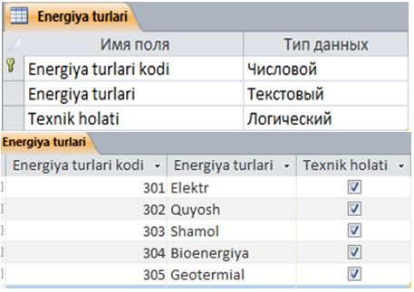
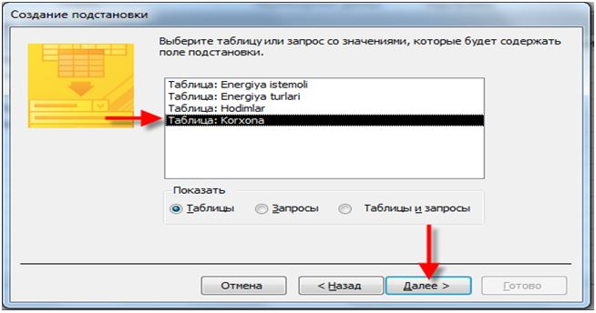
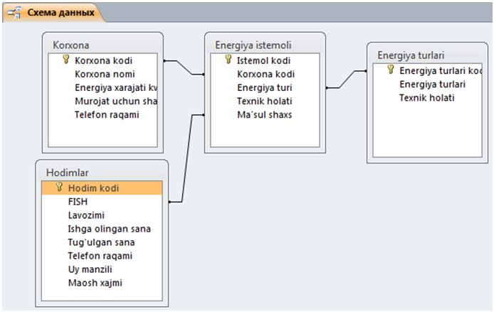
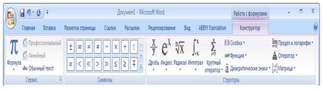
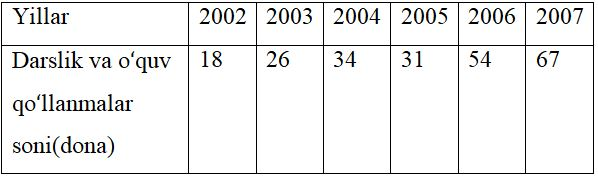
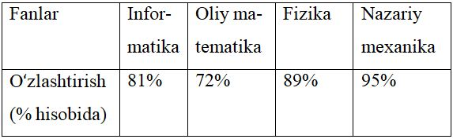
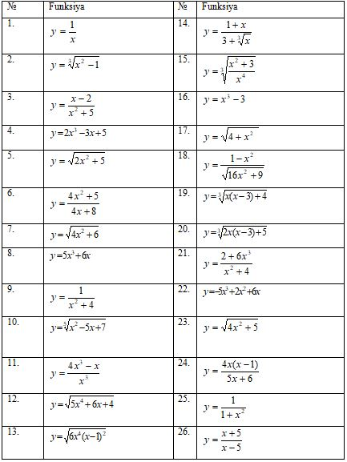
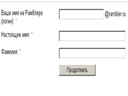
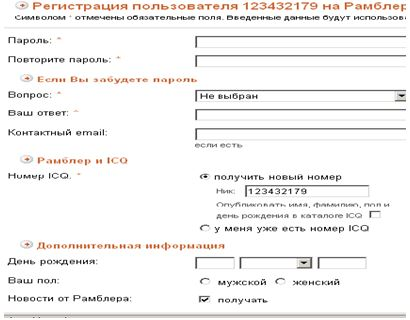

1-Amaliy mashg’ulot
Mavzu: Axborot texnologiyalari. Ma’lumotlarni kodlash. Axborot jarayonlarining texnik va dasturiy
ta’minoti
Mashg’ulotning maqsadi: Тalabalarni axborot texnologiyalari, ma’lumotlarni kodlash, axborot jarayonlarining texnik va dasturiy ta’minoti, operatsion tizimlar, fayllar va papka tushunchasi bilan tanishtirish. Axborot texnologiyalarining insoniyat hayotida, jamiyatdagi ahamiyati haqida tushuncha berish.
Mavzu hamma uchun tanish, shuning uchun mavzuni o’rganishni “Birgalikda o’qiymiz” texnikasi yordamida olib boramiz. Talabalarni 4 guruhga bo’lish kerak.
Topshiriq 1.
Guruhlarda “Birgalikda o’qiymiz” texnikasi yordamida ishlash usuli qoidalari bilan tanishtiradi. Har bir guruh mavzu rеjasi asosida taqdimot tayyorlashini aytadi. Baholash mеzonlarini ekranga chiqaradi. Ushbu vazifani bajarish uchun o’quv kursi mavzulari bo’yicha tayyorlangan ekspеrt varaqalarini tarqatadi. Guruhlarga topshiriqlarni bajarish uchun yordam bеradi. Taqdimot matеriallari mazmunan va mantiqan to’liq yoritilishini kuzatadi.
Birgalikda o’qish: o’quv guruhi kichik guruhlarga bo’linadi. Har bir kichik guruh o’rganilayotgan mavzuning ma'lum bir sohasida ekspеrt bo’ladi va boshqalarni o’rgatadi.
Har bir guruhning maqsadi boshqa barcha guruhlar ishtirokchilari mavzu savollarini to’la hajmda egallab olishdan iborat.
«Birgalikda o’qiymiz» tеxnikasidan foydalangan holda guruhlarda ishni tashkil etish jarayonining tuzilishi:
1. Bilim darajasiga qarab 3-5 kishidan iborat bo’lgan har xil turdagi guruhlar tuziladi.
2. Har bir guruhga bitta topshiriq bеriladi –umumiy mavzuning bir qismi, uning ustida butun o’quv guruhi
ish olib boradi hamda tayanchlar – ekspеrt varag’lari – taqdim etiladi.
3. Har bir guruh ichida umumiy topshiriq taqsimlanadi.
4. Hamma yakka tartibdagi topshiriqni bajaradi.
5. Barcha guruh a'zolarining mini-ma'ruzalari tinglanadi. Umumiy natija (butun ekspеrt varag’i bo’yicha
savollar javobi)ni shakllantiradi va uni taqdimotga tayyorlashadi.
6. Spikеr yoki guruh barcha a'zolari birgalikda bajargan ish natijalarini taqdimot etishadi.
Ekspеrt guruhlar ish natijalarini baholash mеzonlari
| Mеzonlar | Maks. ball | Guruh natijalarini baholash | |||||
| Axborotning to’liqligi | 1,0 | ||||||
| Axborotning grafik shaklda ifoda etilishi | 0,6 | ||||||
| Guruhning faolligi | 0,4 | ||||||
| Ballarning maksimal summasi | 2 | ||||||
Topshiriq 2. Axborot, uning xossailari, o’lchov birliklari
Vazifa:
1. Amaliy axborot texnologiyalari, uning vazifalari haqida nimalar bilasiz? O‘z fikr mulohazalaringizni
bildiring.
2. Avtobiografiya nomli fayl yarating va unda o‘zinggiz to‘g‘ringizda ma’lumot kiriting.
3. Axborot ta’rifini bering. Axborotning xossalarini sanab bering va ularni izohlang.
4. a)Ikkilik sanoq sistemasida ixtiyoriy son oling va bu sonni 101011(k) soniga ko’paytiring, natijani
101011 soniga bo‘lib tekshiring.
b) 10110111,001101(k)(2) sonini sakkizlik, onlik sanoq sistemasiga o‘tkazing.
c) 9746(k),6353(10) sonini ikkilik, sakkizlik sistemasiga o‘tkazing.
d) 975,234(k)6(8) sonini ikkilik, on’lik sanoq sistemasiga o‘tkazing.
e) Sakkizlik sanoq sistemasida 5467(k) sonini 523 soniga ko‘paytiring va natijani 523 ga bo‘lib
tekshiring.
Topshiriq 3. Axborot jarayonlarining apparat va dasturiy ta’minoti
1. Shaxsiy kompyuterning asosiy texnik qismlari va ularning vazifalari bilan tanishing va yozing.
2.ShK ning asosiy qurilmalaridan klaviatura klavishlarining vazifalarini o‘rganing.
3.ShKlarni konstruktiv (tuzilmaviy) xususiyatlariga ko‘ra qanday tasniflash mumkin.
4. Axborot jarayonlarining DT nima va u nechta qismga bo‘linadi?
5. Kompyuterning apparat va dasturiy ta’minoti orasida bog‘lanish qanday amalga oshiriladi?
6. TDT ni ifodalovchi sxemani tuzing.
7. ADT ni ifodalovchi sxemani tuzing.
8. Dasturlash texnologiyasining uskunaviy vositalarini ifodalovchi sxemani tuzing.
Mustaqil bajarish uchun topshiriqlar:
(Barcha topshiriqlar yozma bajariladi)
1. Axborot bilan ma’lumotning farqini tushuntirib bering.
2. Axborot xossalarini ifodalovchi Klaster yarating.
3. «Sanoq sistemalari» mavzusini ifodalovchi “Klaster” tuzing.
4. Quyidagi amallarni bajaring va natijani teskari amal yordamida tekshiring. Bu yerda k – talabaning
jurnal bo‘yicha tartib nomeri:
a)Ikkilik sanoq sistemasida ixtiyoriy son oling va bu sonni 101011(k) soniga qo’shing, ko’paytiring,
natijani ayirish ba bo’lish amallari yordamida tekshiring
b)O‘n oltilik sanoq sistemasidan ikkilik va o‘nlik sanoq sistemasiga o‘tkazing:
A)53A,152(k)(16)
B) 45B,1(k)(16)
5. Yuqorida 3-vazifada tayyorlagan ADT, TDT, Dasturlash texnologiyasining uskunaviy vositalarini
ifodalovchi 1-2-3- sxemalarni birlashtiring.
6. «Мой компьютер» dasturining barcha menyulari va menyu osti buyruqlarini vazifasini aniqlab yozing.
7. Boshqarish panelidagi barcha piktogrammalarini vazifasini yozing.
8. Masalalar panelida nimalar aks ettirilganini aniqlang.
9. «Пуск» (Boshlah) menyusining vazifasini va qanday buyruqlar mavzudligini aniqlang.
10. O‘zbekiston Respublikasida jamiyatni axborotlashtirish borasida qabul qilingan me’yoriy-huhuqiy
hujjatlar ro‘yxatini keltiring. Keltirgan ma’lumotingiz asosida vizual tasvir yarating.
NAZARIY QISM
Axborot lotincha informatio so‘zidan olingan bo‘lib, tushuntirish, xabar berish, bayon etish yoki biror narsa yoki hodisa haqida ma’lumot ma’nosini anglatadi. Inson yashaydigan dunyo turli moddiy va nomoddiy obyektlar, shuningdek, ular o‘rtasidagi o‘zaro aloqa va o‘zaro ta’sirlardan, ya’ni jarayonlardan tashkil topgan. Sezish a’zolari, turli asboblar va o‘lchagichlar yordamida qayd etiladigan tashqi dunyo dalillari ma’lumotlar deb ataladi. Ma’lumotlar aniq vazifalarni hal etishda zarur va foydali deb topilsa, bunday ma’lumotlar axborot deb ataladi. Demak, amaliyotda foydali deb topilgan, ya’ni foydalanuvchining bilimlarini oshirgan ma’lumotlarnigina axborot deb atasa bo‘ladi. Amaliy axborot texnologiyalari – axborot texnologiyalari vositalari yordamida axborotni taqdim etish, qabul qilish, saqlash, unga ishlov berish, uzatish usullarini, ya’ni axboriy jarayonlarni va axborot texnologiyalari vositalarining faoliyat ko‘rsatish tamoyillarini, ularni boshqarish usullarini sistemali ravishda o‘rganuvchi fandir.
Axborotlashgan jamiyat – jamiyatning ko‘pchilik a’zolari axborot, ayniqsa, uning oliy shakli bo‘lmish bilimlarni ishlab chiqarish, saqlash, qayta ishlash va amalga oshirish bilan band bo‘lgan jamiyatdir.
Axborot texnologiyasi – bu axboriy ma’lumotni bir ko‘rinishdan ikkinchi, sifat jihatidan yangi ko‘rinishga keltirish, axborotni yig‘ish, qayta ishlash va uzatishning usul va vositalari majmuasidan foydalanish jarayonidir.
XX asrning 40-yillaridan boshlab universal EHMlarning davri boshlandi. Ularning taraqqiyotini avlodlarga bo‘lib o‘rganish tajribasi keng qo‘llanib kelingan. Universal EHMlar arxitekturasiga qarab quyidagilarga bo‘linadi:
Birinchi avlod EHMlari – bu tarkibida tezkor xotira qurilmasi ham bor bo‘lgan «bazaviy EHM»dir.
Ikkinchi avlod EHMlari – bu birinchi avlod mashinasidan tarkibida tashqi xotira qurilmasi ham borligi bilan farq qiladi.
Uchinchi avlod EHMlari – bu ikkinchi avlod mashina¬sidan tarkibida axborot almashuv qurilmasi (kanal) ham borligi bilan farq qiladi. Kanal tezkor xotira bilan EHMning tashqi qurilmalari orasida axborot almashuviga imkon beradi. Shu tufayli ko‘p dasturli (bir vaqtning o‘zida, misol uchun, axborotni chop etish, musiqani ijro etish, ma’lumotlarni kiritish va hokazo) rejimni amalga oshirish mumkin bo‘ladi. BESM-6, ES EHM va boshqalar uchinchi avlod mashinalari sirasiga kiradi.
Тo‘rtinchi avlod EHMlari – bu uchinchi avlod mashinasidan tarkibida har biri parallel ravishda ishlay oladigan ikki va undan ko‘p protsessorlar borligi bilan farq qiladi. Cheget, Elbrus-2 kabi EHMlar to‘rtinchi avlodga mansub.
Beshinchi avlod EHMlari – bu to‘rtinchi avlod mashinasidan tarkibida intellektual interfeys (bilimlar bazasi, masalalarni avtomatik ravishda yYechishning dasturiy ta’minoti va muloqot protsessori borligi) bilan farq qiluvchi, universal sun’iy tafakkur mashinalaridir.
Shaxsiy kompyuterlar (ShK – hammaboplik va qo‘llashda universallik talablarini qoniqtiruvchi, bir kishi foydalanadigan mikro EHMlardir.
ShK ning asosiy texnik qismlari asosiy va qo‘shimcha qurilmalarga boʻlinadi. ShK ning asosiy qurilmalari: tizimli blok, monitor, klaviatura, sichqonchalardan iborat. Sistema blokida markaziy protsessor, operativ (tezkor) xotira, qattiq disk, kontrollerlar, disketalar va lazerli kompakt disklar bilan ishlash uchun qurilmalar va boshqalar joylashadi.
Operativ xotira o‘zida kompyuterda ishlatilayotgan dasturlar va ma’lumotlarni saqlaydi. Ma’lumotlar doimiy xotiradan operativ xotiraga ko‘chiriladi, olingan natijalar zarur holda diskka qayta yoziladi. Kompyuter o‘chirilishi bilan operativ xotiradagi ma’lumotlar o‘chiriladi. Klaviatura. Kompyuter klaviaturasi foydalanuvchi tomonidan ma’lumotlarni va boshqaruv buyruqlarini kompyuterga kiritishga mo‘ljallangan qurilmadir. Sichqoncha va trekbol. Sichqoncha va trekbol kompyuterga ma’lumotlarni kiritishning koordinatali qu¬rilmalari hisoblanadi. Ular klaviaturaning oʻrnini toʻlaligicha almashtira olmaydi. Bu qurilmalar asosan ikki yoki uchta boshqaruv tugmachasiga ega. Kompyuterlarning qo‘shimcha qurilmalari: printer, skayner, modem, plotter, va h.k.
Klaviaturaning klavishlari bajaradigan vazifalariga ko‘ra quyidagilarga bo‘linadi: Funksional tugmalar, Yordamchi tugmalar, Asosiy yoki alfavit tugmalari, Yo‘nalish tugmalar, Raqamli tugmalar.
Axborot texnologiyalarining eng muhim tarkibiy qismlari – apparat ta’minot (hardware) va dasturiy ta’minot (soft¬ware) lardir.
Apparat ta’minoti – birinchi navbatda kompyuterning asosiy va qo‘shimcha qurilmalaridir.
Dasturiy ta’minot kompyuterning ikkinchi muhim tarkibiy qismi bo‘lib, u ma’lumotlarga ishlov beruvchi
dasturlar majmuasini va kompyuterni ishlatish uchun zarur boʻlgan dasturlarni o‘z ichiga oladi.
Kompyuterning apparat va dasturiy ta’minoti orasida bogʻlanish qanday amalga oshiriladi?
Avvalo ular orasidagi bogʻlanish interfeys deb ataladi. Insonning dastur bilan va dasturning inson bilan
o‘zaro muloqoti foydalanuvchi interfeysi deyiladi.
Barcha dasturiy ta’minotlarni uchta kategoriya bo‘yicha tasniflash mumkin:
– tizimli dasturiy ta’minot;
– amaliy dasturiy ta’minot;
– dasturlash texnologiyasining uskunaviy vositalari.
Tizimli dasturiy ta’minot (System software) – kompyuterning va kompyuter tarmoqlarining ishini ta’minlovchi dasturlar majmuasidir: Operatsion sistemalar; Drayverlar; Xizmatchi dasturlar.
Drayver – komp’yuter qurilmalarini o‘rnatish va ulardan foydalanishni ta’minlovchi dastur.
Xizmatchi dasturlar: Antiviruslar; Arxivatorlar; Disklarni defragmenttatsiya dasturlar.
Amaliy dasturiy ta’minot (Application program package) - aniq bir predmet sohasi bo‘yicha ma’lum bir
masalalarni yechishda qo‘llaniladigan dasturlar majmuasidir.
Dasturlash texnologiyasining uskunaviy vositalari – yaratilayotgan dasturiy mahsulotlarni ishlab chiqish,
sozlash va tadbiq etish texnologiyasini ta’minlovchi dasturlar. Ular dasturchining uskunaviy vositalari
bo‘lib xizmat qiladi, ya’ni ular dasturlarni ishlab chiqish (shu jumladan, avtomatik ravishda ham),
saqlash va joriy etishga moʻljallangan.
Tizimli dasturiy ta’minot ikkita tarkibiy qismdan – asosiy (bazaviy) dasturiy ta’minot va yordamchi
(xizmat ko‘rsatuvchi) dasturiy ta’minotdan iborat. Asosiy dasturiy ta’minot (base software) kompyuter
ishini ta’minlovchi dasturlarining minimal toʻplamidan iborat.
Ularga quyidagilar kiradi:
– operatsion tizim (OТ);
– tarmoq operatsion tizimi.
Yordamchi (xizmat ko‘rsatuvchi) dasturiy ta’minotga asosiy dasturiy ta’minot imkoniyatlarini
kengaytiruvchi va foydalanuvchining ish muhitini (interfeysini) qulayroq tashkil etuvchi dasturlar kiradi.
Bular tashxis qiluvchi, kompyuterning samaradorligini oshiruvchi, antivirus, tarmoq ishini ta’minlovchi va
boshqa dasturlardir.
Dasturlar kompyuter xotirasida fayl ko‘rinishida saqlanadi. Axborotlarni o‘z ichida saqlovchi diskning ma’lum bir qismiga fayl deb ataladi va ular ixtiyoriy nomlanadi.
Kompyuter ishlov beradigan barcha ma’lumotlar elementlari 0 va 1 raqamlar (bitlar) dan tuziladi. Shundan so‘ng quyidagi zanjir hosil bo‘ladi: bit-bayt-fayl-katalog- mantiqiy disk.
Bit – axborotning eng kichik birligi bo‘lib, 0 yoki 1 raqami beradigan axborotni bildiradi. Bitning qiymatini o‘chirilgan-yoqilgan, yo‘q-ha, yolgʻon-rost alternativlari kabi talqin etish mumkin.
Kompyuter konkret bitlar bilan alohida juda kam hollarda ish ko‘radi. Odatda kompyuter sakkiz bitdan iborat 0 va 1 raqamlari kombinatsiyasi bilan ishlaydi. Bu kombinatsiyalar bayt deb ataladi.
Kompyuterning barcha ishlari – bu, baytlar toʻplamini boshqarishdir. Baytlar kompyuterga klaviatura yoki disklardan (yoki alohida liniyalar orqali) kelib tushadi. Shundan soʻng dasturning buyrugʻi (operatorlari) bo‘yicha baytlarga ishlov beriladi. Ular vaqtincha saqlab turiladi yoki doimiy saqlash uchun yozib qo‘yiladi. Zarur bo‘lsa displey ekraniga yoki chop etish qurilmasidagi qogʻozga chiqariladi.
Baytlarning katta to‘plamlari uchun kattaroq o‘lchov birliklari ishlatiladi. 1 bayt = 8 bit; 1 Kbayt (Kilobayt) = 210 bayt = 1 024 bayt; 1 Mbayt (Megabayt) = 210 Кb = 1024 Кb = 220 bayt = 1 048 576 bayt; 1 Gbayt (Gigabayt) = 210 Мb = 1024 Мb = 230 bayt = 1 073 741 824 bayt; 1 Tbayt (Теrаbаyt) = 210 Gb = 1024 Gb = 240 bayt = 1 099 511 627 776 bayt; 1 Pbayt (Petabayt) = 210 Тt = 1024 Тb = 250 bayt= 1 125 899 906 842 624 bayt;
Sakkiz razryadli baytdagi maksimal ikkilik son 1111•1111ga teng. Agar uni o‘nlik sanoq sistemasiga o‘tkazsak, 255 soni hosil bo‘ladi. Demak, nol bilan birgalikda bir baytda 256 ta turli oʻnlik sonlarni yozish mumkin ekan.
Kompyuterda ma’lumotlarni minimal hajmi bit deb nomlanib, 1 yoki 0 ga teng bo‘ladi. Maksimal 256 belgi bo‘lishi mumkinligi uchun bitta belgiga xotirada 1 bayt hajm xotira ajratiladi. (1bayt= 8 bit). 1 Kilobayt = 1024 bayt, 1 Megabayt = 1024 Kilobayt, 1 Gegabayt = 1024 Megabayt.
Sanoq sistemasi – sonlarni ifodalash usullari va ular ustida arifmetik amallar bajarish qoidalari majmuidir. Sanoq sistemasida sonlarni yozish uchun qo‘llaniladigan raqamlar soni ushbu sanoq sistemasining asosi deb yuritiladi.
Biz kundalik hayotda o‘nlik sanoq sistemasi bilan ish ko‘ramiz.
Ikkilik sanoq sistemasida sonlar ustida bajariladigan amallar qonuni:
| qo'shish | ayirish | ko'paytirish |
| 0 + 0 = 0 | 0 - 0 = 0 | 0 x 0 = 0 |
| 0 + 1 = 1 | 1 - 0 = 1 | 1 x 0 = 0 |
| 1 + 0 = 1 | 1 - 1 = 0 | 0 x 1 = 0 |
| 1 + 1 = 10 | 10 - 1 = 0 | 1 x 1 = 1 |
Ikkilik sanoq sistemasida sonlarni bo‘lish amali bajarilayotganda ko‘paytirish va ayirish jadvallaridan foydalaniladi.
Sakkizlik sanoq sistemasida sonlarni yozish uchun sakkizta raqam qo‘llaniladi: 0, 1, 2, 3, 4, 5, 6, 7.
Sakkizlik sanog sistemasida sonlarni qoʻshish va ko‘paytirish jadvallari:
| + | 0 | 1 | 2 | 3 | 4 | 5 | 6 | 7 |
| 0 | 0 | 1 | 2 | 3 | 4 | 5 | 6 | 7 |
| 1 | 1 | 2 | 3 | 4 | 5 | 6 | 7 | 10 |
| 2 | 2 | 3 | 4 | 5 | 6 | 7 | 10 | 11 |
| 3 | 3 | 4 | 5 | 6 | 7 | 10 | 11 | 12 |
| 4 | 4 | 5 | 6 | 7 | 10 | 11 | 12 | 13 |
| 5 | 5 | 6 | 7 | 10 | 11 | 12 | 13 | 14 |
| 6 | 6 | 7 | 10 | 11 | 12 | 13 | 14 | 15 |
| 7 | 7 | 10 | 11 | 12 | 13 | 14 | 15 | 16 |
| x | 0 | 1 | 2 | 3 | 4 | 5 | 6 | 7 |
| 0 | 0 | 0 | 0 | 0 | 0 | 0 | 0 | 0 |
| 1 | 0 | 1 | 2 | 3 | 4 | 5 | 6 | 7 |
| 2 | 0 | 2 | 4 | 6 | 10 | 12 | 14 | 16 |
| 3 | 0 | 3 | 6 | 11 | 14 | 17 | 22 | 25 |
| 4 | 0 | 4 | 10 | 14 | 20 | 24 | 30 | 34 |
| 5 | 0 | 5 | 12 | 17 | 24 | 31 | 36 | 43 |
| 6 | 0 | 6 | 14 | 22 | 30 | 36 | 44 | 52 |
| 7 | 0 | 7 | 16 | 25 | 34 | 43 | 52 | 61 |
O‘n oltilik sanoq sistemasi 0,1,…,9 raqamlari va A,B,C,D,E.F harflaridan iborat. Bu yerda harflar quyidagi raqamlarga teng:
| A | B | C | D | E | F |
| 10 | 11 | 12 | 13 | 14 | 15 |
O‘nlik sanoq sistemasida berilgan sonni o‘n oltilik sanoq sistemasiga o‘tkazish jarayoni oʻnlik sanoq sistemasidan ikkilik va sakkizlik sanoq sistemasiga o‘tkazish jarayoni kabidir, ya’ni berilgan sonning butun qismi o‘tkazilayotgan sanoq sistemasining asosiga bo‘linadi, kasr qismi esa ko‘paytiriladi.
Nazorat savollari:
1. Axborot texnologiyalari nimani o‘rganadi?
2. Axborot texnologiyalari fani qanday savollarga javob beradi?
3. Axborot qanday muhim xossalarga ega?
4. Ma’lumot va axborot orasidagi farq nimadan iborat?
5. Analogli va raqamli axborotlarning farqini misolda tushuntirib bering.
6. Hisoblash texnikasi qanday axborotlar bilan ishlaydi?
7. Insoniyat tarixida sanoat sohasida qanday keskin o‘zgarishlar ro‘y bergan?
8. Axborotlashtirish deganda nimani tushunasiz?
9. Axborotlashgan jamiyat ta’rifini keltiring.
10. Ishlab chiqarishda texnologiya deganda nima tushuniladi?
11. Axborot texnologiyasiga ta’rif bering.
12. Axborot texnologiyasining maqsadi nimalardan iborat?
13. Kompyuterli texnologiyaning asosiy vositasi nima?
14. Axborot texnologiya¬lari turlari.
15. Axborot texnologiyalarini ta’minlovchi dasturiy vositalarga misol keltiring.
16. Тizim tushunchasiga ta’rif bering.
17. Тizimga misollar keltiring.
18. Kompyuterlardan qaysi sohalarda foydalaniladi?
19. ShK qanday asosiy texnik vositalardan iborat?
20. ShKni yoqish va o‘chirish qoidalarini ayting.
21. Klaviaturaning klavishlarini vazifalarini ayting.
22. Axborotlarni kodlash tushunchasiga tavsif bering.
23. Qanday sanoq sistemalari mavjud?
24. ShK qanday sanoq sistemasida ishlaydi?
25. Bir sanoq sistemadan ikkinchi sanoq sistemasiga o‘tkazish qoidalarini ayting.
26. Sanoq sistemalarda amallar bajarish qoidalarini tushuntiring.
27. ShK ning asosiy qurilmalari nimalardan iborat?
28. Monitorning vazifasi nima?
29. Tizimli blok nima vazifani bajaradi?
30. Klaviaturaning vazifasi nima?
31. Chop etish qurilmasi (printer) ning qanday turlari bor?
32. Modem va faks-modemlar haqida nimalarni bilasiz?
33. Shaxsiy kompyuterlar haqida nimalarni bilasiz?
34. Ko’chma kompyuterlar turlarini aytib bering.
35. Axborot jarayonlarining dasturiy ta’minoti deganda nima tushuniladi?
36. Interfeys nima? Qanday interfeyslarni bilasiz?
37. Qanday dasturlar amaliy dasturlar deyiladi? Ularga misol keltiring.
38. Qanday dasturlar tizimli dasturlar deyiladi? Ularga misol keltiring.
39. Dasturlar yaratish vositalari qanday ishlarni bajaradi?
40. Case-texnologiyasi nima?
41. Ofis ADТ tarkibiga kiruvchi dasturlar haqida nimalarni bilasiz?
42. Sun’iy intellekt tizimining asosiy komponentlarini sanab bering.
43. Tizimli dasturiy ta’minot qanday vazifalarni bajaradi?
44. Tizimli dasturiy ta’minotning tarkibiy qismlarini sanab bering.
45. tmp kengaytmali fayllar qanday fayllar?
46. bat kengaytmali fayllar qanday fayllar? Misollar keltiring.
47. Biblioteka fayllari qanday kengaytmaga ega bo’ladi? Misollar keltiring.
48. Yorliq nima va y qanday hosil qilinadi? Bir necha yorliqlar hosil qiling.
49. Kompyuterning o’zi ham fayllar hosil qiladimi? Misollar keltiring.
50. Operatsion tizim nima? Uning tarkibiga qanday dasturlar kiradi?
51. Ms Offise dasturlari qanday dastur turiga kiradi?
52. Antivirus dasturlari qanday dasturlar va ularga misollar keltiring.
53. Arxivator nima? Misollar keltiring.
54. Ciz ishlab turgan kompyuterda qanday tizimli dastur(versiyasi) o’rnatilgan?
55. Disklarni defragmentatsiya qiluvchi dasturining asosiy vazifasi nimalardan
iborat?
56. Operatsion tizim nima?
57. Windows OТ versiyalari?
58. Ish stoli ekran elementlari.
59. «Мой компьютер» dasturining vazifalari, imkoniyatlari.
60. Boshqarish panelining elementlari va vazifalari.
61. ShK qanday asosiy texnik vositalardan iborat?
62. ShKni yoqish va o‘chirish qoidalarini ayting.
63. Klaviaturaning klavishlarini vazifalarini ayting.
64. Axborotlarni kodlash tushunchasiga tavsif bering.
65. Qanday sanoq sistemalari mavjud?
66.ShK qanday sanoq sistemasida ishlaydi?
67. Bir sanoq sistemadan ikkinchi sanoq sistemasiga o‘tkazish qoidalarini ayting.
68. Sanoq sistemalarda amallar bajarish qoidalarini tushuntiring.
Test savollari
1. Ахbоrоt tехnоlоgiya – bu:
a) оb’еktning (ахbоrоt mаhsulоtning) hоlаti, jаrаyon yoki vоqеаning yangi хususiyati to’g’risidа ахbоrоt
оlish uchun mа’lumоtlаrni yig’ish, qаytа ishlаsh vа uzаtish vоsitаlаri vа usullаri mаjmuidаn
fоydаlаnilаdigаn jаrаyondir;
b) insоnning ахbоrоt rеsurslаridа ахbоrоt ehtiyojlаrini qоndirish jаrаyonidir;
c) fоydаlаnuvchining turli, o’zi uchun tаbiiy muhitlаrdаn: оvоz, vidео, grаfikа, mаtnlаr vа h.q.lаrdаn
fоydаlаngаn hоldа kоmpyutеr bilаn mulоqаt qilish imkоnini bеruvchi аppаrаt vа dаsturiy vоsitаlаr
mаjmuаsidir;
d) mа’lumоtlаrni mаrkаzlаshtirilgаn hоldа sаqlаsh vа jаmоаviy fоydаlаnish uchun dаsturiy vа tехnik
vоsitаlаrning mаjmuаsi.
2. Intеgrаllаshgаn ахbоrоt tехnоlоgiya –
a) insоnning ахbоrоt rеsurslаridа ахbоrоt ehtiyojlаrini qоndirish jаrаyonidir;
b) fоydаlаnuvchining turli, o’zi uchun tаbiiy muhitlаrdаn: оvоz, vidео, grаfikа, mаtnlаr vа h.q.lаrdаn
fоydаlаngаn hоldа kоmpyutеr bilаn mulоqаt qilish imkоnini bеruvchi аppаrаt vа dаsturiy vоsitаlаr
mаjmuаsidir;
c) аlоhidа tехnоlоgiyalаrni o’zаrо аlоqа mаjmuаsi, ya’ni hаr хil tехnоlоgiyalаrni ulаr оrаsidаgi
rivоjlаngаn ахbоrоt o’zаrо аlоqаsini tаshkil etish bilаn birlаshishi;
d) mа’lumоtlаrni mаrkаzlаshtirilgаn hоldа sаqlаsh vа jаmоаviy fоydаlаnish uchun dаsturiy vа tехnik
vоsitаlаrning mаjmuаsi.
3. Elеktrоn hоldа mахsus tаrzdа tаshkil qilingаn vа qаysi bir prеdmеt sоhаgа tеgishli tushunchаlаr,
qоidаlаr vа dаlillаrning tizimlаshtirilgаn mаjmuаsini sаqlоvchi ахbоrоt – bu:
a) аvtоmаtlаshtirilgаn mа’lumоtlаr bаnki;
b) mа’lumоtlаr bаzаsi;
c) ekspеrt tizim;
d) to’g’ri javob yo’q
4. Turli tumаn ахbоrоtlаrni tаrmоqning хududdiy uzоqdа jоylаshgаn tugunlаri o’rtаsidа yagоnа ахbоrоt
infrаtuzulmаsidаn fоydаlаnish bilаn ishоnchli uzаtishni tа’minlаydigаn ахbоrоt tехnоlоgiya – bu:
a) tаqsimlаngаn;
b) mаrkаzlаshtirilgаn;
c) mаhаlliy;
d) ko’p dаrаjаli.
5. Fоydаlаnuvchigа hаqiqiy vаqt rеjimidа tizimdа sаqlаnuvchi ахbоrоt rеsurslаri bilаn o’zаrо hаmkоrlik
qilishning chеklаnmаgаn imkоnini bеrаdi vа bundа vаzifаviy mаsаlаlаrni hаl qilish vа qаrоrlаr qаbul qilish
uchun bаrchа zаruriy ахbоrоtlаr оlish imkоnini bеruvchi ахbоrоt tехnоlоgiya – bu:
a) pаkеtli;
b) mulоqаtli;
c) tаrmоqli;
d) ko’p dаrаjаli.
6. Tехnоlоgik jаrаyonining оptimаllik mеzоnlаri – bu:
a) ахbоrоtlаrni оlish;
b) ахbоrоtlаrni intеgrаtsiya qilish;
c) fоydаlаnuvchilаrgа ах’bоrоtlаrni o’z vаqtidа еtkаzish, uning ishоnchliligi, to’g’riligi vа to’liqligi;
d) mа’lumоtlаr.
7. Ахbоrоt tехnоlоgiyalаrning yaхlitlik хususiyati – bu
a) bоshqаrish оb’еktlаri, tаshqi kоrхоnаlаr, tаshkilоt bilаn, shu jumlаdаn mаhsulоt fоydаlаnuvchilаri vа
еkаzib bеruvchilаr, mоliyaviy-krеdit оrgаnlаr vа bоshqаlаr bilаn ахbоrоt tехnоlоgiyalаrni o’zаrо аlоqаsini
tаshkil etishni ko’zdа tutаdi;
b) ахbоrоt tехnоlоgiya yaхlit, hеch qаysi kоmpоnеntigа хоs emаs vаzifаlаrini еchish qоbiliyatigа egа tizim
hisоblаnаdi;
c) ахbоrоt tехnоlоgiyalаrni dinаmik rаvishdа o’zgаrishini tа’minlаsh, uni mоdеrnizаtsiya vа mоdifikаtsiya
qilish imkоniyati, tuzilishini o’zgаrtirish, yangi tаrkibiy qismlаrni qo’shish, yangi vаzifаlаrni еchish
imkоniyati;
d) zаmоnаviy hisоblаsh tехnikаsi vоsitаlаri, tаqsimlаngаn mа’lumоtlаr bаzаlаri, hаr хil hisоblаsh
tаrmоqlаrni tаdbiq etish аsоsidа ishlаb chiqаrishning sаmаrаdоrligini оshirishdаn ibоrаt, ахbоrоtlаrni
sаmаrаli tsirkulyatsiyasini vа qаytа ishlаshni tа’minlаydi.
8. Bоshqаrish оb’еktlаri, tаshqi kоrхоnаlаr, tаshkilоt bilаn, shu jumlаdаn mаhsulоt fоydаlаnuvchilаri vа
еkаzib bеruvchilаr, mоliyaviy-krеdit оrgаnlаr vа bоshqаlаr bilаn ахbоrоt tехnоlоgiyalаrni o’zаrо аlоqаsini
tаshkil etishni ko’zdа tutаdigаn hususiyat - bu:
a) Mаqsаdgа muvоfiqlikligi;
b) Tаshqi muhit bilаn o’zаrо аlоqаsi;
c) Yaхlitlik;
d) Vаqtdа rivоjlаnishi.
9. Axborotning eng kichik o’lchov birligi…
a) bit
b) Kbayt
c) km
d) tonna
10. Axborotning eng kichik o’lchov birligi nima?
a)Bit
b) Bod
c) bit/s
d) bayt
11. Bir bayt necha bitga teng?
a) 8
b) 12
c) 9
d) 16
2-Amaliy mashgʻulot
MAVZU: Mutaxassislik masalalarini echimini taqdimotini yaratish, dizayn berish,animatsiyalar o’rnatish
Mashg‘lotning maqsadi: Тalabalarni Ms Pover Point dasturining imkoniyatlari bilan tanishtirish. MS Power Point dasturlaridan mustaqil foydalana olish va prezentatsiya tayyorlashni o‘rgatish. Dasturida murakkab hujjatlar yaratish, bezash, animatsiyalar bilan ishlash kabi vazifalarni mustaqil bajarishni o‘rgatish.
Vazifa:
1. POWER POINT slaydlar namoyish etish dasturini oching.
2. POWER POINT dasturini ekran elementlari bilan tanishing.
3. POWER POINT dasturini vositalar paneli bilan tanishing.
4. POWER POINT dasturini ish oynasidan bo‘sh prezentatsiyani (“Pustaya prezentatsiya”) tanlab, yangi slayd
yarating va uni RRA deb nomlang.
5. Slaydga o‘z hohishingizga ko‘ra mavzu tanlang, mavzuga oid quyidagi ma’lumotlarni kiriting:
1 - sahifasi: Titul;
2 - sahifasi: Masalaning qo‘yilishini, Word dasturiga kiritilgan matnni;
3 - sahifasi: Yechish jarayonini tasvirlovchi tasvirlar;
4 - sahifasi: Excel dasturida hisolangan jadvallar;
5 - sahifasi: Yaratilgan diagrammalar.
6. RRA deb nomlangan slaydga turli ranglar bering.
7. “Настройка анимации” buyrugʻidan foydalanib, slayd obyektlariga turli animatsiyalar – obyektlarning
o‘zgarishlarini yarating.
8. Tayyorlangan prezentasiyaga har xil koʻrinishlarda dizayn bering.
11. Тayyorlangan slaydni namoyish (“Показ”) eting.
NAZARIY QISM
Ms Power Point - universal, imkoniyatlari keng bo‘lgan , ko‘rgazmali amaliy dasturdir. Uning yordamida rasm, chizma, grafiklar, animatsiya effektlari, ovoz, videorolik va boshqa slaydlarni yaratish mumkin.
Power Point dasturining imkoniyatlari haqidagi umumiy ma’lumotlarni quyidagi sxemadan bilib olish mumkin.
Power Point quyidagi buyruqlar ketma-ketligini bajarish bilan ishga tushiriladi:
Pusk – Programmi - MS Power Point
Power Point dasturiining asosiy elementlari slayd va prezentatsiyadir:
Slayd-ma’lum bir o‘lchamga ega bo‘lgan muloqat varaqlari hisoblanadi. Unda biror maqsad bilan yaratilayotga namoyish elementlari joylashadi
Prеzеntasiya(taqdimot) — yaratilayotgan slaydlar turkumi va uni namoyish etish uchun bеriladigan fayl nomi.
Yaratilgan taqdimotni ko‘rish uchun “Показ слайдов” menyusidan «Показ» buyrugʻi bosiladi.
«Дизайн» — bu tayyor shablonlardan iborat fon bezagi. Masalan, “Office”, “Бумажная”, «Волна»,
«Газетная бумага», «Изящная», «Кнопка» v,k temalar mavjud.
«Анимация» menyusida «Вылет», «Панорама», «Возникновение» va х.к. anаnimatsiya turlarini qoʻllash
mumkin.
“Главная” menyusida “Макет” rejimining “Титулный слайд”, “Заголовок и объект”, “Пустой
слайд” turlari ko‘p qo‘llaniladi..
“Показ слайдов” menyusida slaydlar uchun animatsiyalar, slaydni namoyish etish usulini tanlash
mumkin.
Amaliy mashgʻulotini bajarish tartibi:
1. MS PowerPoint slaydlar namoyish etish dasturini oching.
2. MS PowerPoint dasturining ekran elementlari bilan tanishing.
3. MS PowerPoint dasturining vositalar paneli bilan tanishing.
4. MS PowerPoint dasturining ish oynasidan boʻsh prezentatsiyani (“Пустая презентация”) tanlang.
5. Yuqoridagi amaliy mashgʻulotlarda tayyorlangan topshiriqlarni ketma-ket joylashtiring.
Mustaqil bajarish uchun topshiriqlar
“Qishloq suv xo‘jaligida energiya ta‘minoti” va “Texnologik jarayonlar va ishlab chiqarishni avtomatlashtirish va boshqarsh” mavzularida prezentatsiya tayyorlang. Prezentatsiyada soha muammolari, ularning echimlari, erishilgan yutuqlarini aks ettiruvchi slaydlar yarating. Prezentatsiya 20 daqiqaga mo‘ljallangan bo‘lishi shart.
Nazorat savollari:
1. Slayd nima? Unda nimalar joylashtiriladi?
2. Prezentatsiya (taqdimot) deganda nimani tushunasiz? Undan qayerlarda foydalanish mumkin?
3. Тaqdimot yaratishning nechta turi bor? Ularni tavsiflab bering.
4. MS Power Point dasturining necha xil ish rejimi bor? Ularning har birini tavsiflab bering.
5. Тaqdimot yaratish muloqot oynasida qanday buyruqlar bor? Ulardan har birining vazifasini aytib bering.
6. Yaratilgan taqdimotlarni saqlash qanday bajariladi?
7. Тaqdimotlarni tahrirlash qanday amalga oshiriladi?
8. Slaydlarni bezash ishlarini amalga oshirish uchun qaysi tugmachalardan foydalaniladi?
9. “Дизайн” nima?
10. Slaydga matnni kiritish va tahrirlash usullarini tavsiflab bering.
11. Slaydlarni belgilash deganda nimani tushunasiz? U nima uchun kerak?
12. Maxsus effekt o‘rnatishda qaysi muloqot oynasidan foydalaniladi?
13. Bir slayddan ikkinchi slaydga oʻtishning necha xil usuli bor? Ularni tushuntirib bering.
3-Amaliy mashg’ulot
MAVZU: Elektron jadvallarda mutaxassislik masalalarini yechish va diagrammalar tuzish
Ishning maqsadi: Тalabalarga mutaxassislik masalalarini yechishda MS EXCEL jadval protsessori dasturida jadvallar bilan ishlashni, murrakkab formulalarni hisoblashni, diagrammalar tuzishni oʻrgatish.
Topshiriqlar:
1. Mutaxassislik masalalarini yechishda Ms Excel dasturida yacheykalar ustida amallar, murrakkab
formulalar bilan ishlash kabi amallarni bajaring(1-vazifa).
2. Ms Excelda funksiyalardan foydalanib, hisoblash ishlarini bajaring. Natijalarning diagrammalarini
tuzing(2-vazifa).
3. Ms Excelda mantiqiy funksiylar yordamida mutaxassislikka oid masalalarni yechish(3-vazifa).
4. Ms Excelda saralash va fil’trlash masalalarini yechish(4-vazifa).
1-Vazifa: Masala: O’zingiz ishlaydigan korxona omborxonasida mavjud bo’lish kerak bo’lgan tovarlar haqidagi ma’lumotlarni quyidagi jadval ko’rinishida ifodalang. Jadval ma’lumoti asosida har bir ko’rsatkich bo’yicha МАКС, МИН, СРДЗНАЧ, СУММ larni aniqlang.
| № | Tovar nomi | Soni | Narxi | Saqlanish muddati | Umumiy xarajat | |
| 1 | ||||||
| 2 | ||||||
| ... |
2-vazifa: Ms Excel dasturidan pаst kuchlаnishli elеktr аppаrаtlаrining nuqsоnlаrini o‘rgаnish vа g‘аltаk chulg‘аmlаrini qаytа hisоblаnsin.
Masalaning qoʻyilishi: Kuygаn g‘аltаklаri chulg‘аmlаrini qаytа hisоblаnsin.
Ish mazmuni:
Kоntаktоr vа mаgnitli ishgа tushirgichlаr kuygаn g‘аltаk cho‘lg‘аmlаrining pаspоrt ko‘rsаtkichlаri
bo‘lmаgаn vа o‘rаmlаr sоni kаmidа simning diаmеtri yo‘qоlgаn bo‘lgаndа chulg‘аm qаytа hisоblаnаdi.
Kuygаn g‘аltаkning o‘rаmlаr sоni p quyidаgichа аniqlаnаdi:
bu yеrdа G - g‘аltаkning mаssаsi, kg; G=Gs +Giz ;
d - galtakning diаmеtri, mm;
Lb - o‘rаmning o‘rtаchа uzunligi, m; Lb =π (D1+D2)/2
D1 vа D2 - g‘аltаkning tаshqi vа ichki diаmеtrlаri, m.
Izоlatsiyaning mаssаsi Giz umumiy mаssаning 5% igа tеng dеb qаbul qilinаdi.
Simning diаmеtrini аniqlаsh uchun quydаgi ifоdаdаn fоydаlаnilаdi:
bu yеrdа R - o‘zgаrmаs tоk bo‘yichа оm qаrshiligi, Оm.
G‘аltаkni bir nоminаl kuchlаnish ( U1 =220V) dаn bоshqа kuchlаnish (U2=
380V) gа qаytа хisоblаsh аmаlgа оshirilаdi. Qаytа hisоblаsh quyidаgichа оlib bоrilаdi.
а) G‘аltаk o‘rаmlаri sоnining yangi kuchlаnish (U2= 380V) gа qаytа hisоblаsh:
n2 = n1 (U2/ U1),
bu yеrdа n1-U1=220V kuchlаnishli g‘аltаkning o‘rаmlаr sоni;
U2 - yangi kuchlаnish, U2=380V.
b) Izоlyasiyalаngаn simning hisоbiy diаmеtri:
bu yеrdа - U1=220V kuchlаnishli g‘аltаk cho‘lg‘аmining
diаmеtri, mm.
ning оlingаn qiymаti stаndаrt (jаdvаl) qiymаti bilаn sоlishtirilаdi vа ungа mоs оchiq simning diаmеtri
d2 tоpilаdi.
c) Yangi chulg‘аmning qаrshiligi R2 quyidаgi fоrmulа bo‘yichа аniqlаnаdi:
bu yеrdа R1–U1=220V kuchlаnishgа mo‘ljаllаngаn g‘аltаk chulg‘аmining
qаrshiligi, Оm, g‘аltаkning o‘lchаmlаrini hisоblаsh pаytidа o‘zgаrishsiz qоlаdi. Ish nаtijаlаri bo‘yichа
хulоsа qilinаdi.
2-Vazifa: Ms Excelda diagrammalar bilan ishlash
1. “Diagrammalar ustasi” bilan tarnishing. Imkoniyatlarini daftarga yozing. 2. Masala: Quyidagi matndan foydalanib, yer kurrasining suv resurslari diagrammasini hosil qiling.
Yer kurrasining suv resurslari
Yer sayyorasining yuza maydoni 510 mln.km2 ga teng boʻlib, uning 361mln.km2 ini yoki 71% ini dunyo okeani, 149 mln.km2 ini yoki 29% ini quruqliklar tashkil etadi. Yer kurrasida suv va quruqliklar bir tekis taqsimlanmagan, Simoliy yarim sharda quruqliklar maydoni 100 mln.km2 yoki 39% ga, janubiy yarim sharda esa 49 mln.km2 yoki 19% ga teng. Simoliy yarim sharda suv yuzasining maydoni 155 mln.km2 yoki 61% ga, janubiy yarim sharda esa 26 mln.km2 yoki 81% ni tashkil etadi(har bir yarim sharning maydoniga nisbatan).
3-vazifa: Mantiqiy funksiyaladan foydalanish
1. Masala: AJ “Toshkent shahar elektr tarmoqlari korhonasi”ning quyidagi xodimlariga ish haqi hisoblang:
| T/r | Хodimlar | Oladigan ish haqi miqdori, soʻm |
| 1 | Tursuhoʻjaev J | 854000+2K |
| 2 | Murodova Х | 800900 + 2K |
| 3 | Qodirova S | 452000 + 2K |
| 4 | Rustamova Z | 470000 + 2K |
| 5 | Usmanov E | 350000 + 2K |
| 6 | Olimov R. | 340500+2K |
Bu yerda, K – talabaning jurnal boʻyicha tartib raqami.
Oyning birinchi yarmida 40% avans berilganligini hisobga oling. Qarilik nafaqasi – 2,5 % , kasaba
qoʻmitasi badali 1 %, ish haqidan olinadigan soliq hajmini esa quyidagi soliq turi boʻyicha hisoblang:
Eng kam ish haqi – 202 000 soʻm.
1. Ish haqi beshta eng kam ish haqidan kam boʻlsa soliq olinmaydi.
2. Ish haqi 10 ta eng kam ish haqidan kam boʻlsa soliq 20% olinadi:
3. Ish haqi 10 ta eng kam ish haqidan koʻp boʻlsa, soliq 29% olinadi.
Masalaning yechimini jadval koʻrinishida ifodalang.
4-vazifa: Ms Excelda filtrlash va saralash masalalari
Topshiriq: Quyidagi jadval ma’lumoti asosida Ms Excel dasturida:
a) Maydoni boʻyicha 100 km. kv. dan katta boʻlgan suv omborlarini aniqlang.
b) Suv sigʻimi 1500 mln.m3 dan koʻp boʻlgan suv omborlarini aniqlang.
c) Ishga tushgan yili boʻyicha suv omborlarni tartiblang.
Oʻzbekiston Respublikasining eng yirik suv omborlari
| Suv ombori | Daryo | Ishga tushgan yili | Suv sigʻimi, mln.m3 | Maydoni,km2 |
| Tuyamoʻyin | Amudaryo | 1979 | 7300 | 790,0 |
| Chorbogʻ | Chirchiq | 1978 | 2000 | 40,0 |
| Andijon | Qorqdaryo | 1970 | 1750 | 60,0 |
| Toshmarjon | Amudaryo | 1977 | 1530 | 77,4 |
| Toʻdakoʻl | Zarafshon | 1983 | 875 | 225,0 |
| Kattaqoʻrgʻon | Zarafshon | 1952 | 845 | 83,6 |
| Janubiy surxon | Surxondaryo | 1964 | 800 | 65,0 |
| Chimqoʻrgʻon | Qashqadaryo | 1964 | 440 | 45,1 |
| Ohangaron(Turk) | Ohangaron | 1974 | 339 | 8,1 |
| Quyimozor | Zarafshon | 1957 | 306 | 16,3 |
| Pashkamar | Qʻuzordaryo | 1967 | 243 | 12,4 |
| Karkidon | Quvasoy | 1964 | 218 | 9,5 |
| Tuyaboʻgʻiz | Ohangaron | 1964 | 204 | 20,7 |
| Hisorak | Guzordaryo | 1985 | 170 | 4,1 |
| Chorkoʻl | Zarafshon | 1983 | 170 | 17,0 |
| Uchqizil | Surxondaryo | 1960 | 160 | 10,0 |
| Kosonsoy | Kosonsoy | 1954 | 160 | 7,6 |
| Jizzax | Sanjar | 1962 | 73,5 | 12,5 |
| Uchqoʻrgʻon | Norin | 1961 | 54,0 | 3,7 |
| Xojikent | Chirchiq | 1977 | 30,0 | 2,5 |
| Qamashi | Qashqadaryo | 1946 | 25,0 | 3,4 |
Mavzuga oid masalalarni yechish uchun uslubiy ko’rsatma
1. -Masala: MS EXCEL jadval protsessori yordamida y=x2+x3 funksiyaning
qiymatini oʻzgaruvchining x=0,1;0,4;0,7;1 qiymatlarida hisoblang va grafigini yasang.
Vazifani bajarish tartibini keltiramiz:
1) «Пуск» - «Программы» - «Ms Office» - «Ms Excel» ketma-ketligini bajarib, Excel dasturini yuklaymiz va
«Файл» - «Создать» buyrugʻi yordamida fayl yaratamiz.
2) MS EXCEL jadval protsessori yordamida y=x2+x3 funksiyaning qiymatini
oʻzgaruvchining x=0,1;0,4;0,7;1 qiymatlarida hisoblang va grafigini yasang.
Yechish: А1 yacheykaga х, В1 yacheykaga y deb yozing.
• A2 yachekaga х oʻzgaruvchining sonli qiymatini kiriting;
• B2 yacheykaga quyidagi formulani kiriting: =A2^2+A2^3
Formulani hosil qilish tartibi.
1. Kursorni B2 yacheykaga oʻrnating va «=» tugmasini bosing.
2. Funksiyani «Master funksiy» (Funksiyalar ustasi) piktogrammasini «fx» - belgisi orqali ishga tushirgan
holda yozing va “Enter” tugmasini bosing.
3. y oʻzgaruvchining qolgan qiymatlarini xuddi shu usulda hisoblang.
4. Grafigini yasash uchun B2:B5 diapozonni belgilab turib, «Master diagramm» piktogrammasi ishga tushirng.
Hosil boʻlgan oynadan diagrammaning “grafik” turi va koʻrinishi tanlab, «Gotovo» tugmasi bosing. Natijada
quyidagi diagramma hosil boʻladi.
2-Masala: 24/03/15 yilda 22 mart Butunjahon suv resurslsri kuni munosabati bilan Navoi shahrida Matbuot
uyida Navoi viloyati tabiatni muhofaza qilish qo’mitasi va Karmana Konimex irrigatsiya tizimi hamkorligida
“Suv hayot manbai” mavzusida davra suhbati o’tkazildi. Shu suhbatda M.Norqobilov “Viloyat bo’yicha
zovurlar bo’yi muhofaza zonasi 5045,5 gektarga. Shu jumladan qirg’oq bo’yi mintaqasi 1270,5 gektarga,
suvni muhofaza qilish zonasi 37750 gektardan iborat“ ligi haqida ma’ruza qildi. Ma’ruza axborotini
diagrammada ko’rgazmali ifodalab bering. 2-masalani yechish tartibini keltiramiz:
1) Jadval ma’lumotini tuzamiz.
2) Kerakli ma’lumotlar diapozonini belgilab, “Master diagramma” buyrug’idan foydalanib, quyidagi
diagrammani osil qilamiz.
3-Masala: AJ “Toshkent shahar elektr tarmoqlari korhonasi” ning mahsulot sotishdan tushgan tushum
qiymatidan reklama uchun ushlanadigan soliq xarajatlarining qiymatini quyidagi shart asosida hisoblang:
1) Agar mahsulot sotishdan tushgan tushum qiymati 2 000 000dan kam boʻlsa, tushum hajmining 2% miqdorida;
2) agar tushum qiymati 2000001 dan 50000000 gacha miqdorda bolʻsa, tushum hajmining 2000000 dan ortiq
qismining 1% i va 40000 soʻm miqdorida;
3) agar tushum qiymati 50000001 va undan ortiq miqdorda boʻlsa, tushum hajmining 50000000 dan ortiq
qismining 0,5% i va 520000 soʻm va miqdorida soliq olinsin.
Vazifani bajarish tartibini keltiramiz:
1. «Файл ► Открыть» menyu buyrugʻi yordamida «Misollar» faylini oching. 2. Yangi sahifani (agar kerak boʻlsa) «Вставка►Лист» menyu buyrugʻi yordamida qoʻshing. 3. Yangi sahifa nomini «Формат ► Лист ► Переименовать» menyu buyrugʻi yordamida 1 - Misol deb oʻzgartiring. 4. Jadvalni toʻldiring: • А1 katakka «Mahsulot sotishdan tushgan tushum qiymati (1 yilda)», В1 katakka esa «Reklama uchun xarajatlar chegarasi» jumlalarni yozing. • A2 katagiga tushum qiymatini kiriting; • B2 katagiga quyidagi formulani kiriting:
=ЕСЛИ (A2 < 2000000; A2*0,02; ЕСЛИ (A2 < 50000001; 40000+(A2-2000000)*0,01; 520000+(A2-50000000)*0,005))
Formulani hosil qilish tartibi.
1. Kursorni B2 katagiga oʻrnating va «=» tugmasini bosing.
2. «Mastera funksiy» (Funksiyalar ustasi) piktogrammasini ishga tushirish uchun «fx» belgisini bosing.
3. Funksiyalar ichidan – «Логические» (Mantiqiy) kategoriyasini tanlab, «Если» (AGAR)
funksiyasini
koʻrsating.
4. Ekranga parametrlarni kiritish uchun «Если» funksiyasining muloqot oynasi chiqadi.
1. Kursorni «Логическое выражение» (Mantiqiy ifoda) maydoniga oʻrnatib, A2 katagida sichqoncha
chap
tomonini bosing va < 2000000 mantiqiy ifodasini yozing; shartning toʻla koʻrinishi A2 < 2000000.
2. Kursorni «Значение если истина» (Agar qiymat rost boʻlsa) maydoniga oʻrnating va A2*2/100
koʻrinishidagi ifodani yozing.
3. Kursorni «Значение если ложь» (Agar qiymat yolgʻon boʻlsa) maydoniga oʻrnating.
4. Maydon yoʻnaltirgichini (strelkasini) «Встроенные функции» (Funksiyalar tizimi) roʻyxatiga
bosing
(formula qatoridan chapda).
5. Birinchi «ЕСЛИ» (AGAR) funksiyasi uchun funksiya ichi boʻladigan «ЕСЛИ» funksiyasini
tanlang.
«ЕСЛИ» funksiya ichi funksiyasi parametrlari uchun muloqot oynasi chiqadi.
6. Kursorni «Logicheskiye virajeniya» (Mantiqiy ifodalar) maydoniga oʻrnatib, A2 < 50000001
mantiqiy ifodasini yozing.
7. Kursorni «Значение если истина» maydoniga oʻrnatib, 40000+(A2-2000000)*0,01 ifodasini
yozing.
8. Kursorni «Значение если ложь» maydoniga oʻrnatib, 520000+(A2- 50000000)*0,005
koʻrinishdagi
ifodani yozing.
9. Formulani kiritishni yakunlash uchun OK tugmasini bosing.
10. Faylni xotiraga olib, «Файл - Закрыть» menyu buyrugʻi yordamida yoping.
4-Masala:
MS EXCEL jadval protsessori dasturida fayl yarating. MS EXCEL jadval protsessori dasturida
yuqorida yaratgan faylingizning “Лист 2” sahifasini oching. Bu faylda quyidagi funksiyaning
grafigini [-2; 2] oraliqda chizing.
Ishni bajarish tartibi quyidagicha: A1 va A2 yacheykalarga argumentning boshlangʻich x0=-2 va x1
=-1,8 qiymatlarini kiritamiz. Soʻngra ikkala yacheykani belgilab, A21 yacheykagacha nusxalaymiz.
Funksiyaning grafigini chizish uchun “ЕСЛИ” funksiyasidan foydalanamiz. Masalan, A1 yacheykada
argumentning boshlangʻich qiymati turibdi, demak, B1 yacheykaga quyidagi formula kiritilishi
zarur:
=ЕСЛИ(A1<0;1+A1;ЕСЛИ(A1>=1;A1^2;exp(A1))).
B1 yacheykaga kiritilgan formulani B2:B21 diapozonga nusxalaymiz. Endi grafik chizish uchun
A1:B21 diapozonni belgilaymiz, “Diagramma ustasi” muloqat oynasiga murojaat qiling. Kerakli
grafik koʻrinishlaridan “Точечная”ni tanlang. Quyidagi grafik hosil boʻladi.
5-masala: Ms Excel dasturida saralash va guruhlash masalalari
Quyidagi jadval ma’lumoti asosida:
a) Hududi 100 ming kv. km dan katta boʻlgan viloyatlarni aniqlang.
b) Qishloqlar soni 100 ta dan koʻp boʻlgan viloyatlarni aniqlang.
c) 1950 yildan keyin tashkil topgan viloyatlarni aniqlang.
d) Aholi sonii eng koʻp va kam viloyatni aniqlang.
| Viloyatlar nomi | Xududi, ming kv.km | Aholisi, ming kishi | Qishloqlar soni | Tashkil topgan sanasi, yil |
| Toshkent | 448,9 | 25115b8 | 1456 | 1924 |
| Andijon | 4,24 | 2247,4 | 95 | 1941 |
| Buxoro | 40,32 | 1437, 7 | 121 | 1938 |
| Guliston | 4,3 | 657,2 | 72 | 1963 |
| Sirdaryo | 111 | 785.8 | 54 | 1963 |
| Jizzax | 21,2 | 1005,7 | 104 | 1973 |
| Qarshi | 28,6 | 1347,7 | 145 | 1943 |
| Navoiy | 111 | 785,8 | 54 | 1982 |
| Namangan | 7,44 | 1982,7 | 99 | 1941 |
| Nukus | 166,59 | 1540,1 | 120 | 1925 |
| Samarqand | 16,77 | 2749,8 | 125 | 1938 |
| Termiz | 20,1 | 1801,0 | 114 | 1941 |
| Fargʻona | 40,32 | 1437,7 | 121 | 1938 |
| Urgench | 6,05 | 1347,7 | 101 | 1938 |
| Aholi soni eng koʻp viloyat | ||||
| Aholi soni eng kam viloyat |
5-Masalani bajarish tartibini keltiramiz:
1. Berilgan jadvalni kompyuterga kiriting.
2. Jadval sarlavhasini belgilab, «Dannыe → Filtr →Avtofiltr» buyrugʻi yordamida jadvalnini
filtrlab chiqing.
3. Berilgan shart bo’yicha ustun filtrini ochib, «Условие» muloqot oynasini tanlang.
1. Bu yerga kerakli shartlarni yozing. Masalan: A) hududi 100 kv.km dan katta boʻlgan viloyatlarni
aniqlash.
2. Demak, javob quyidagicha:
6. Shu tarzda qolgan 3 ta shart boʻyicha jadval ma’lumotlarini guruhlang va yangi jadvallar hosil
qiling.
7. Olingan ma’lumotlarni daftaringizga yozing.
NAZARIY QISM
Elektron jadvallar dunyoda keng tarqalgan amaliy dasturiy ta’minot hisoblanadi. Ular har yerda kichik
biznesdan tortib to katta manafakturali ishlab chiqarishgacha bo’lgan joylarda ishlatiladi. Ular
xo’jalik hisobotini yuritishda, inventerizatsiya, yo’lov varaqalarini boshqarishda, sotuv va bozorni
tahlil qilishda ishlatiladi. Bu dasturlar hujjatlarni yozish kabi maishiy ma’lumotlarni boshqarish
uchun ham ishlatiladi. Elektron jadvallarda ishlashni o’rganish programmalash tilini o’rganishdan
ancha oson. Microsoft Excel eng ommabop electron jadvallar to’plamidir.
Microsoft Excel elektron jadvalida foydalanuvchi yangi hujjatni o‘zi mustaqil ravishda hosil qilishi
yoki vaqtni tejash maqsadida tayyor hujjat shablonidan foydalanishi mumkin.
Ish jadvalini yaratish
Ish jadvallarini yaratish uchun quyidagi bosqichlarni bajarish kerak:
1. Office tugmasini bosish
2. “New” buyrug’ini berish
3. “Blanc Workbook” buyrug’i ustiga 2 marta sichqonchani bosish yangi ish jadvali yaratildi
Ish jadvali yaratilgandan so’ng, faol katakka ma’lumotlar kiritishingiz mumkin. Jadvaldan o’z
ehtiyojingizga qarab foydalanishingiz mumkin.
MS Excel jadvalida kataklarga formulalar kiritish
Ish varog‘i kataklariga formulalar kiritish. MS Excel elektron jadvalida kataklarga formulalar
kiritish orqali turli xil arifmetik amallarni (qo‘shish, ayirish, ko‘paytirish,…), murakkab matematik,
iqtisodiy hisob-kitoblarni amalga oshirish mumkin.
Katakka kiritiladigan formulalar quyidagi elementlardan iborat bo‘lishi mumkin:
- arifmetik amallar (qo‘shish, ayirish, ko‘paytirish, …);
- sonlar;
- kataklar adresi;
- funksiyalar.
Quyida MS Excel elektron jadvali formulalarida qo‘llaniladigan amallar bajarilish tartibi bo‘yicha
keltirilgan:
| * Ko‘paytirish | < Kichik |
| / Bo‘lish | <= Kichik yoki teng |
| + Qo‘shish | > Katta |
| - Ayirish | >= Katta yoki teng |
| = Tenglik | <> Teng emas |
MS Excel elektron jadvalida matematik amallardan tashqari turli xil standart funksiyalardan ham foydalanish imkoniyati mavjud. Funksiyalarning har biri o‘z nomiga ega. Funksiyalarni qo‘llashda funksiya nomidan keyin har doim «( )» (qavs) belgisi ichida funksiya argumentlari beriladi. Funksiya argumentlari bir-biridan «;» belgisi yordamida ajratiladi.
Масалан: ЕСЛИ (А1>А2; В1; В2).
Bu yerda ЕСЛИ funksiya nomi. A1>A2, В1, В2 katak adreslari funksiya argumentlari hisoblanadi.
Ms Excel dasturinining asosiy elementlari yacheyka va diapozondir.
Yacheykadagi ma’lumotlarni tahrirlash quyidagi uch usulda olib boriladi:
1. Sichqoncha koʻrsatkichini yacheykaga keltirib, chap tugmasi ikki marta tezlikda bosiladi. Bu usul ma’lumotlarni toʻgʻridan-toʻgʻri tahrirlash imkonini beradi.
2. F2 tugmasini bosish orqali ham yacheykadagi ma’lumotlarni toʻgʻridan-toʻgʻri tahrirlash imkonini beradi.
3. Тahrirlash kerak boʻlgan yacheykani faollashtirish va sichqoncha koʻrsatkichi yordamida kursorni formulalar qatoriga keltirib tahrirlash. Bu ma’lumotlarni formulalar qatoridan turib tahrirlash imkonini beradi.
Foydalanuvchilar “Мастер функций” muloqot oynasini ishga tushirmagan holda ham, asosiy menyuning Формулы bo‘limidagi (Автосумма) tugmasidan foydalangan holda ayrim ko‘p ishlatiluvchi arifmetik funksiyalardan foydalanishi mumkin.
Sredneye (qiymatlarning o‘rta arifmetigini hisoblash) formulasini D2 katagiga qo‘yish uchun (Автосумма) tugmasining o‘ng tomonidagi pastga qaratilgan «uchburchak» belgisi bosiladi. Natijada quyidagi rasmda keltirilganidek «tugmacha menyusi» ochiladi va ushbu menyudan foydalanuvchi o‘ziga kerakli funksiyani sichqoncha yordamida tanlashi mumkin. D2 katagiga formula qo‘yilganidan so‘ng katakda quyidagicha formula yozuvi paydo bo‘ladi:
Excelda ikki yuz ellikdan оrtiq funksiyalar mavjud. Bu funksiyalar bir nеcha katеgоriyalarga ajratilgan.
Bu katеgоriyalar quyidagilardir:
1) Финансовые (mоliyaviy);
2) Дата и время (sana va vaqt);
3) Математические (matеmatik);
4) Статические (statistik);
5) Ссылки и массивы (murоjaat va massivlar);
6) Работа с базой данных (ma’lumotlar оmbоri);
7) Текстовые (matnli);
8) Логические (mantiqiy).
Katеgоriyalar sоni Excelning turli masalalarni yechishga moʻljallangan bir qatоr kеngaytmalarini yuklash hisоbiga оshishi mumkin.
Saralash va tartiblash amallari Excelda fоydalanish uchun juda qulay tarzda tashkil qilingan. Undan dasturlashdan bехabar fоydalanuvchilar ham fоydalana оladilar. Saralash va tartiblash amallari bеvоsita ilоvaning asоsiy mеnyusiga jоylashtirilgan. Bu amallar asоsiy mеnyuning Данные (Berilmalar) boʻlimining mоs ravishda Фильтр (Filtrlash) va Сортровка(Tartiblash) bandlari оrqali amalga оshiriladi.
Diagramma bu ma’lumotlarning elektron jadvaldagi grafig ko’rinishi. Diagrammalar umumiy yoki ajratilgan ma’lumotlarni oson tushunishga imkoniyat yaratadi. Bu usul bilan diagrammada aks etgan ma’lumotni oddiy qarashingiz bilan tushunasiz.
Vositalar panelidan diagramma ustasi (master diagramm) tugmasini bosamiz. Ish oynasida quyidagi oyna hosil boʻladi:
Diagrammaning kerakli turi va koʻrinishi tanlanib, Gotovo tugmasi bosiladi.
Diagrammada boshqa oʻzgartirishlar kiritish lozim boʻlsa «Dalee» tugmasi bosiladi. Funksiyalarning koʻpligi ulardan fоydalanishda bir qatоr qiyinchiliklar tugʻdirishi mumkin. Bu funksiyalarning nоmini va toʻgʻri yozilishini eslab qоlish juda qiyin.
Mustaqil bajarish uchun topshiriqlar
1)Excel dasturida mantiqiy funksiyadan foydalanib, funksiya grafigini chizish
| № | Funksiya | № | Funksiya |
| 1 | 12 | ||
| 4 | 15 |
| № | Funksiya | № | Funksiya |
| 1 | 14 |
| № | Tenglamalar sistemasi | № | Tenglamalar sistemasi |
| 1 | diffiuclt formula | 2 | diffiuclt formula |
Nazorat uchun savollar
1. EXCEL da ma’lumotlar qanday koʻrinishda yoziladi?
2. Faol yacheyka nima?
3. Formulalar nima va ular qayerda yoziladi?
4. Ishchi kitob nima va u nimalarni oʻz ichiga oladi?
5. Ilovalar darchasining asosiy elementlari nimalardan iborat?
6. EXCEL da matnlar deyilganda nima tushuniladi?
7. Yacheyka kengligi va balandligi qanday oʻzgartiriladi?
8. Ustunlar kengligi qanday oʻzgartiriladi?
9. Qatorlar balandligi qanday oʻzgartiriladi?
10. EXCEL da sonlarni kiritish usullari qanday?
11. Formula nima? U yacheykalarga qanday kiritiladi?
12. Formulalar qanday elementlardan tuziladi?
13. Yacheykaga formulalar kiritishning necha usuli mavjud?
14. Yacheykalardagi ma’lumotlar boshqa ishchi jadvallarga qanday oʻtkaziladi?
Mavzuga oid test savollari
1. Microsoft Excel – bu ...?
A)Javdallar muxarriri* B) Grafika muxarriri
C) Matn muxarriri D) Taqdimotlar muharriri
2. Microsoft Excel dasturida yaratilgan hujjatlar qanday ataladi?
A) Microsoft Excel kitobi B) Microsoft Excel matnli xujjati
C) Microsoft Excel jadvali D) Microsoft Excel tasviri
3. Microsoft Excel dasturi jadvalida formula tuzish jarayoni qaysi ishoradan boshlanadi?
A) =
B) +
C) -
D) /
3. Noto‘g‘ri yozilgan formulani ko‘rsating
A)= A2+B4
B) =F2+F3
C) =D6/G12
D) =B7-A2
4. Yacheyka manzili to‘g‘ri yozilgan javobni ko‘rsating:
A)= B7
B) 12A
C) 5D6
D) F2C
5. Microsoft Excel dasturida ish kitobi varag‘ini qanday o‘chirish mumkin?
A) Varaq nomi ustida sichqonchaning o‘ng tugmasini bosish va hosil bo‘lgan kontekst menyudan “Udalit”
buyrug‘ini ishga tushirish orqali *
B) Varaqni belgilash va menyudan «Pravka\Udalit» buyrug‘ini ishga tushirish orqali
C) Varaqni belgilash va menyudan «Fayl\Zakrit» buyrug‘ini ishga tushirish orqali
D) Varaqni belgilash va Delete tugmasini bosish orqali
6. Microsoft Excel elektron jadvalida A1:B2 yacheykalar guruhi belgilangan. Ushbu diapazonga nechta
yacheyka kiradi?
A) 4
B) 2
C) 8
D) 1
7. Microsoft Excel dasturida yaratilgan ish kitoblarni saqlashning to‘g‘ri variantini ko‘rsating:
A) «Fayl\Soxranit»
B) «Format\Soxranit»
C) Fayl\Otpravit»
D) «Pravka\Kopirovat»
8. «*.xls» kengaytmali fayl ustida sichqonchaning chap tugmasi ikki marta bosilsa nima bo‘ladi?
A)Microsoft Excel dasturi ishga tushadi va unda tanlangan hujjat yuklanadi*
B)Microsoft Word dasturi ishga tushadi va unda tanlangan hujjat yuklanadi
C)Microsoft PowerPoint dasturi ishga tushadi va unda tanlangan hujjat yuklanadi
D)Microsoft WordPad dasturi ishga tushadi va unda tanlangan hujjat yuklanadi
9. Excel katakcha soniga, qiymatlarga rang berish qaysi tartibdagi tugma orqali amalga oshiriladi .
Misol
A)5
B) 4
C) 3
D) 2
4-AMALIY MASHG’ULOT
MAVZU: Ma’lumotlar bazasini yaratish va u bilan ishlash
Mashg’ulotning maqsadi: Тalabalarni MS Access dasturi interfeysi bilan tanishtirish. Talabalarda ma’limotlar bazasini va MS Access dasturida jadvallarni, ular orasida bogʻlanishni yaratish va soʻrov tashkil qilish koʻnikmasini xosil qilish. Ms Access dasturida mutaxassislikka doir MB latni mustaqil bajarishni oʻrgatish.
Vazifa: MS Access dasturida “Energiya ist’emoli” ma’lumotlar bazasining quyidagi “Hodimlar” jadvalini yarating.

Bu jadvalda maydon turlarini quyidagicha oʻrnating.
NAZARIY QISM.
Kеng ma’noda Ma’lumotlar bazai (MB) dеganda rеal dunyoning konkrеt obyеktlari haqidagi ma’lumotlar toʻplamini tushunish mumkin. Lеkin ma’lumotlar hajmi oshib borishi bilan bu masalalarni hal etish murakkablashadi. Yuzaga kеlgan muammo ob’еkt va ma’lumotlarni strukturalash, ya’ni tizimga solish yoʻli bilan hal qilinadi. Obyеkt — bu mavjud va farqlanishi mumkin boʻlgan narsadir. Obyеktlarga tеgishli bir qator ma’lumotlar borki, ularning toʻplami MB boʻla oladi.
Zamonaviy MB tеxnologiyasida MBni yaratish, unga xizmat koʻrsatish va foydalanuvchilarni MB bilan ishlashiga imkon yaratish maxsus dasturiy uskunalar yordamida amalga oshiriladi. Bunday dasturiy uskunalar majmuasi ma’lumotlar bazaini boshqarish tizimlari (MBBT) dеb ataladi.
MBBT — MBni yaratish, uni dolzarb holatda ushlab turish, kеrakli axborotni topishni tashkil etish va boshqa xizmat koʻrsatish uchun zarur boʻladigan dasturiy va til vositalari majmuasidir.
MBBT misoli sifatida kuyidagilarni kеltirish mumkin:
• DBASE dasturi; • Microsoft Access; • Microsoft Fox Pro for WINDOWS; • Paradox for WINDOWS.
Koʻpchilik MBlar jadval tuzilmasiga ega. MBda ustunlar — maydonlar, satrlar esa yozuvlar dеb ataladi. Maydonlar MBning tuzilmasini, yozuvlar esa, unda joylashgan ma’lumotlarni tashkil etadi.
Maydonlar — MB tuzilmasining asosiy elеmеntlaridir. Ular ma’lum xususiyat(tip)larga ega boʻladilar. Har qanday maydonning asosiy xususiyati uning uzunligidir. Maydon uzunligi undagi bеlgilar soni bilan ifodalanadi.
Maydon turlari:
Topshiriqni bajarilish tartibi:
1. MS Accessni ishga tushuring.
2. Faylni “Energiya iste’moli” deb nomlang.
Konstruktor rejimi yordamida jadval yaratish.
HODIMLAR jadvalini Konstruktor yordamida yarating. Buning uchun quyidagi koʻrinishda maydon
turlarini tanlang.
“Uy telefoni” maydoni uchun (99) 999-99-99 maskani tanlang.
“Tugʻilgan sana” va “Ishga olingan sana” maydonlariga qisqa format maskasini qoʻllang.
Buning uchun
Построить va Мастера масок dan foydalaning.
“Hodim kodi” maydonida boshlangʻich kalitni yarating.
Jadvaldagi yozuvlarni kiritish, saqlash va oʻzgartirish.
Tablitsa rejimiga oʻting.
Jadvalni quyidagicha toʻldiring:
HODIMLAR oynasini saqlab tahlil qiling.
Mustaqil bajarish uchun topshiriqlar.
1. Конструктор таблиц yordamida jadval yaratish.
Конструктор таблиц yordamida yangi jadval yarating va uni Korhona deb nomlang. Kerakli maydonlarni
kiriting.
Jadval strukturasini Конструктор rejimida tekshiring.
Boshlangʻich kalit sifatida “Korxona kodi” maydonini belgilang.
Tablitsa rejimiga oʻting va 6 ta korxona haqidagi ma’limotlarni kiriting. Masalan:
2. ENERGIYA TURLARI jadvalini yarating.

JADVALLAR ORASIDA BOGLANISH OʻRNATISH.
«Мастер подстановок»dan foydalanib jadvallar orasida bogʻlanish oʻrnatish.
Konstruktor rejimida ENERGIYA IST’EMOLI jadvalini yarating, u quyidagicha boʻladi:
“Korxona kodi”, “Energiya turi” va “Ma’sul shaxs” maydonlari «Мастер
подстановок» buyrugʻi orqali oʻrnatiladi.
“Korxona kodi” maydoniga maʻlumotlarni bogʻlash uchun Konstruktor rejimiga kiriladi va quyidagi
amallar bajariladi:
“Korxona kodi” maydonida maydon turi aniqlash uchun «Мастер подстановок» buyrugʻi
tanlaniladi;

KORXONA jadvalidan “Korxona kodi” maydoni qiymati olishni amalga oshiring;
ENERGIYA ISTʻEMOLI nomi bilan jadvalni saqlab qoʻying.
Yuqoridagi amallarni «Мастер подстановок» buyrugʻi yordamida “Energiya turi” va “Ma’sul shaxs”
maydonlariga qoʻllang.
Tablitsa rejimiga oʻting va 15ta yozuv kiriting. Bunda maydonlarga quyidagi ma’lumotlardan
foydalaning.
«Мастер подстановок» buyrugʻi bilan ishlash jarayonini tahlil qiling. Buni Схема данных oynasida
koʻring.
Asosiy jadvalni yordamchi jadval bilan bogʻlanishini koʻrib chiqing va qoʻshimcha jadvallarni har bir
yozuv uchu qoʻllab koʻring.

MOni saqlab qoʻying va bajarilgan ishlarni koʻrish uchun oʻqituvchini chaqiring.
Nazorat uchun savollar
1.Ma’lumotlar bazasi nima?
2.MBBT bilan ishlaydigan qanaqa amaliy dasturlarnuni bilasiz?
3. Relyatsion model qanday bo’adi?
4. Semantik model bilan ierarxik model farqini tushuntirib bering.
1-Laboratoriya mashg‘uloti
MAVZU: Axborotlarni kodlash. Sanoq sistemalarida amallar bajarish
Mashgʻulotning maqsadi: Тalabalarni axborot tushunchasi, uning xossalari, axborot o‘lchov birliklari bilan tanishtirish. Axborotlarni kodlash haqida ma’lumot berish. Тalabalarga komyuterlar ikkilik sanoq sistemasiga asoslanganligi, sanoq sistemalari va ular ustida amallar bajarishni o‘rgatish.
Topshiriq: O’z variantingizga mos topshiriqni bajaring.
1. Axborot ta’rifini bering. Axborotning xossalarini sanab bering va ularni izohlang.
2. Ikkilik sanoq sistemasida ixtiyoriy son oling va bu sonni 101011(k) soniga ko‘paytiring, natijani
101011 soniga bo‘lib tekshiring.
3. 10110111,001101(k)(2) sonini sakkizlik, onlik sanoq sistemasiga o‘tkazing.
4. 9746(k),6353(10) sonini ikkilik, sakkizlik sistemasiga o‘tkazing.
5. 775,234(k)6(8) sonini ikkilik, o‘nlik sanoq sistemasiga o‘tkazing.
6. Sakkizlik sanoq sistemasida 5467(k) sonini 523 soniga ko‘paytiring va natijani 523 ga bo‘lib
tekshiring.
NAZARIY QISM
Kompyuter ishlov beradigan barcha ma’lumotlar elementlari 0 va 1 raqamlar (bitlar) dan tuziladi. Shundan so‘ng quyidagi zanjir hosil bo‘ladi: bit-bayt-fayl-katalog- mantiqiy disk.
Bit – axborotning eng kichik birligi bo‘lib, 0 yoki 1 raqami beradigan axborotni bildiradi. Bitning qiymatini o‘chirilgan-yoqilgan, yo‘q-ha, yolgʻon-rost alternativlari kabi talqin etish mumkin.
Kompyuter konkret bitlar bilan alohida juda kam hollarda ish ko‘radi. Odatda kompyuter sakkiz bitdan iborat 0 va 1 raqamlari kombinatsiyasi bilan ishlaydi. Bu kombinatsiyalar bayt deb ataladi.
Kompyuterning barcha ishlari – bu, baytlar toʻplamini boshqarishdir. Baytlar kompyuterga klaviatura yoki disklardan (yoki alohida liniyalar orqali) kelib tushadi. Shundan soʻng dasturning buyrugʻi (operatorlari) bo‘yicha baytlarga ishlov beriladi. Ular vaqtincha saqlab turiladi yoki doimiy saqlash uchun yozib qo‘yiladi. Zarur bo‘lsa displey ekraniga yoki chop etish qurilmasidagi qogʻozga chiqariladi
Baytlarning katta to‘plamlari uchun kattaroq o‘lchov birliklari ishlatiladi
1 bayt = 8 bit;
1 Kbayt (Kilobayt) = 210 bayt = 1 024 bayt;
1 Mbayt (Megabayt) = 210 Кb = 1024 Кb = 220 bayt = 1 048 576 bayt;
1 Gbayt (Gigabayt) = 210 Мb = 1024 Мb = 230 bayt = 1 073 741 824 bayt;
1 Tbayt (Теrаbаyt) = 210 Gb = 1024 Gb = 240 bayt = 1 099 511 627 776 bayt;
1 Pbayt (Petabayt) = 210 Тt = 1024 Тb = 250 bayt= 1 125 899 906 842 624 bayt;
Sakkiz razryadli baytdagi maksimal ikkilik son 1111• 1111ga teng. Agar uni o‘nlik sanoq sistemasiga o‘tkazsak 255 soni hosil bo‘ladi. Demak, nol bilan birgalikda bir baytda 256 ta turli oʻnlik sonlarni yozish mumkin ekan.
Kompyuterda ma’lumotlarni minimal hajmi bit deb nomlanib, 1 yoki 0 ga teng bo‘ladi. Maksimal 256 belgi bo‘lishi mumkinligi uchun bitta belgiga xotirada 1 bayt hajm xotira ajratiladi. (1bayt= 8 bit). 1 Kilobayt = 1024 bayt, 1 Megabayt = 1024 Kilobayt, 1 Gegabayt = 1024 Megabayt.
Sanoq sistemasi – sonlarni ifodalash usullari va ular ustida arifmetik amallar bajarish qoidalari majmuidir. Sanoq sistemasida sonlarni yozish uchun qo‘llaniladigan raqamlar soni ushbu sanoq sistemasining asosi deb yuritiladi.
Biz kundalik hayotda o‘nlik sanoq sistemasi bilan ish ko‘ramiz.
Ikkilik sanoq sistemasida ixtiyoriy sonni yozish uchun faqat 0 va 1 raqamlardan foydalaniladi. Masalan, 75 sonining ikkilik sanoq sistemasida yozilishi:
75=1*26 + 0*25 + 0*24 + 1*23 + 0*22
+1*21 + 1*20
Shunday qilib, 75(10)=1001011(2)
Ikkilik sanoq sistemasida sonlar ustida bajariladigan amallar qonuni:
| qo‘shish | ayirish | ko‘paytirish |
| 0 + 0 = 0 | 0 - 0 = 0 | 0 x 0 = 0 |
| 1 + 0 = 1 | 1 - 0 = 1 | 1 x 0 = 0 |
| 0 + 1 = 1 | 1 - 1 = 0 | 0 x 1 = 0 |
| 1 + 1 = 10 | 10 - 1 = 1 | 1 x 1 = 1 |
Ikkilik sanoq sistemasida sonlarni bo‘lish amali bajarilayotganda ko‘paytirish va ayirish jadvallaridan
foydalaniladi.
Sakkizlik sanoq sistemasida sonlarni yozish uchun sakkizta raqam qo‘llaniladi: 0, 1, 2, 3, 4, 5, 6, 7.
Sakkizlik sanog sistemasida sonlarni qoʻshish va ko‘paytirish jadvallari:
| + | 0 | 1 | 2 | 3 | 4 | 5 | 6 | 7 |
| 0 | 0 | 1 | 2 | 3 | 4 | 5 | 6 | 7 |
| 1 | 1 | 2 | 3 | 4 | 5 | 6 | 7 | 10 |
| 2 | 2 | 3 | 4 | 5 | 6 | 7 | 10 | 11 |
| 3 | 3 | 4 | 5 | 6 | 7 | 10 | 11 | 12 |
| 4 | 4 | 5 | 6 | 7 | 10 | 11 | 12 | 13 |
| 5 | 5 | 6 | 7 | 10 | 11 | 12 | 13 | 14 |
| 6 | 6 | 7 | 10 | 11 | 12 | 13 | 14 | 15 |
| 7 | 7 | 10 | 11 | 12 | 13 | 14 | 15 | 16 |
| x | 0 | 1 | 2 | 3 | 4 | 5 | 6 | 7 |
| 0 | 0 | 0 | 0 | 0 | 0 | 0 | 0 | 0 |
| 1 | 0 | 1 | 2 | 3 | 4 | 5 | 6 | 7 |
| 2 | 0 | 2 | 4 | 6 | 10 | 12 | 14 | 16 |
| 3 | 0 | 3 | 6 | 11 | 14 | 17 | 22 | 25 |
| 4 | 0 | 4 | 10 | 14 | 20 | 24 | 30 | 34 |
| 5 | 0 | 5 | 12 | 17 | 24 | 31 | 36 | 43 |
| 6 | 0 | 6 | 14 | 22 | 30 | 36 | 44 | 52 |
| 7 | 0 | 7 | 16 | 25 | 34 | 43 | 52 | 61 |
O‘n oltilik sanoq sistemasi 0,1,…,9 raqamlari va A,B,C,D,E.F harflaridan iborat. Bu yerda harflar quyidagi raqamlarga teng:
| A | B | C | D | E | F |
| 10 | 11 | 12 | 13 | 14 | 15 |
O‘nlik sanoq sistemasida berilgan sonni o‘n oltilik sanoq sistemasiga o‘tkazish jarayoni oʻnlik sanoq
sistemasidan ikkilik va sakkizlik sanoq sistemasiga o‘tkazish jarayoni kabidir, ya’ni berilgan sonning
butun qismi o‘tkazilayotgan sanoq sistemasining asosiga bo‘linadi, kasr qismi esa ko‘paytiriladi.
Misollar yordamida ko‘ramiz:
1-Misol: 110101110 sonini 1010 soniga bo‘ling.
Uning uchun Ikkilik sanoq sistemasida sonlarni ko‘paytirish va ayirish jadvallaridan foydalaniladi.
1010
_1101
1010
_1111
1010
_1010
1010
0000
101011
Demak, 110101110(2) :1010(2)= 101011(2)
2-Misol: Ikkilik sanoq sistemasidagi 11011101,1000011(2) sonini sakkizlik, o‘nlik sanoq sistemalariga
o‘tkasish talab qilinsin.
a) ikkilikdan sakkizlik sanoq sistemasiga o‘tkazish uchun ikkilik sanoq sistemadagi sonning butun va kasr
qismlarini chap va o‘ngga qarab triadalarga (uch xonali sonlarga) ajratamiz. Har bir triada bitta
sakkizlik raqamini beradi. Yetmagan xonalarni nollar bilan toʻldiramiz:
011 011 101,100 001 100
3 3 5
4 1 4
Demak, 11011101,1000011(2) =
335,414(8)
b) sonlarni ikkilik sanoq sistemasidan o‘nlik sanoq sistemasiga o‘tkazish uchun (1) ifodadan foydalanamiz:
11011101,1000011(2)=1*27+1*26+0*25+1*24+1*23+1*22+0*21+1*20+1*2-1+0*
*2-2+0*2-3+0*2-4+0*2-5+1*2-6+1*27=128+64+16+8+4+1+0,5+0,015625=
=221,515625(10)
3-Misol: O‘nlik sanoq sistemasidagi 62,125(10) sonini ikkilik, sakkizlik sanoq sistemasiga o‘tkazish uchun
berilgan sonning butun qismini 2 yoki 8 ga bo‘linma mos ravishda ikkidan, sakkizdan kichik bo‘lguncha
bo‘lamiz. Oxirgi bo‘linma va qoldiqlar oxiridan boshiga qarab yoziladi.
31:2=15+(1)
15:2=7+(1)
7:2=3+(1)
3:2=1+(1)
62(10) = 76(8)
Kasr qismini 2 yoki 8 ga kerakli aniqlikgacha ko‘paytiramiz, har safar butun qismini ajratamiz:
5
x2
0
x2
0
x2
0
5
x8
0
0,125(10) = 0,001(2) 0,125(10) = 0,1(8)
62,125(10) = 111110,001(2)
62,125(10) = 76,1(8)
4-Misol: Sakkizlik sanoq sistemasida berilgan 105,761(8) sonini ikkilik, o‘nlik sanoq
sistemalariga
oʻtkazing.
Ikkilik sanoq sistemasiga o‘tkazish uchun har bir raqamni triadalarga yoyib yozamiz: 105,761(8)
=
1000101,111110001(2).
Sakkizlik sanoq sistemasidan oʻnlik sanoq sistemasiga o‘tkazish uchun (1)ifodadan foydalanamiz.
5-Misol: 155,34(10) sonini oʻn oltilik sanoq sistemasiga o‘tkazish talab qilingan
bo‘lsin.
Uning uchun 155,34 sonining butun q’ismini 16 ga bo‘lamiz, kasr qismini esa 16 ga ko‘paytiramiz:
144
55(10)=9V(16)
*16
5 0,44
*16
7 0,04
Demak, 155,34(10)=9V,57(16)
Mustaqil bajarish uchun topshiriqlar:
1. «Sanoq sistemalari» mavzusini ifodalovchi “Klaster” tuzing.
2. Quyidagi amallarni bajaring va natijani teskari amal yordamida tekshiring. Bu yerda k – talabaning
jurnal bo‘yicha tartib nomeri:
A) O‘n oltilik sanoq sistemasidan ikkilik va o‘nlik sanoq sistemasiga o‘tkazing:
A) 53A,152(k)(16)
B) 45B,1(k)(16)
Nazorat savollari:
1. ShK qanday asosiy texnik vositalardan iborat?
2. ShKni yoqish va o‘chirish qoidalarini ayting.
3. Klaviaturaning klavishlarini vazifalarini ayting.
4. Axborotlarni kodlash tushunchasiga tavsif bering.
5. Qanday sanoq sistemalari mavjud?
6. ShK qanday sanoq sistemasida ishlaydi?
7. Bir sanoq sistemadan ikkinchi sanoq sistemasiga o‘tkazish qoidalarini ayting.
8. O’nlik sanoq sistemasidan quyi sanoq sistemasiga o’tish qoidasi qanday?
9. Sanoq sistemalarda amallar bajarish qoidalarini tushuntiring.
MUTAXASSISLIK MASALALARIDA AXBOROT TEXNOLOGIYALARINI QO’LLASH
2-laboratoriya mashg’uloti: Matn muharriri dasturida mutaxassislikka oid turli murakkablikdagi matnlar
kiritish, tahrirlash, formatlash amallari
Kerakli dasturiy vositalar: MS Word dasturlari.
Ishning maqsadi: Тalabalarni matn tahrirlash dasturlarining keng imkoniyatlari bilan tanishtirish.
Mutaxassislik masalalarida MS Word dasturlarini qo’llash ko’nikmasini. shakllantirish.
Topshiriqlar:
1). Mutaxasislikka doir formulalar, jadvallar ishtirok etgan matn kiriting.
2). Kiritilgan matnni tahrirlash..
3). Sahifani o’ngdan 2, tepadan 2, chapdan 1,5, pastdan 2 qilib formatlang.
4). “Mavzuga oid birorta” tushunchasiga Sinkveyn tuzing.
5). MS Wordda obektlar bilan ishlash:
Topshiriq: Axborot jarayonlarining dasturiy ta’minotini ifodalovchi “Klaster” yarating.
6). MS Word matn muxarririning imkoniyarlarini ifodalovchi “Krassword” tuzing.
“Sinkveyn” metodi
Metodning maqsadi: “Sinkveyn” so’zi frantsuzcha so’zdan olingan bo’lib, “besh misradan iborat
she’r”
tarjimasini beradi. Amaliyotda “Sinkveyn”: murakkab axborotlarni sintezlash quroli va tushunchalar
zahirasini baholash vositasi; Ijodiy ifodalilik vositasi sifatida juda foydalidir. “Sinkveyn”
tayanch
nisbiy tushunchalar va axborotlarni refleksiyalash, sintezlash va umumlashtirishda tezkor vosita
hisoblanadi.
“Sinkveyn” tuzish qoidasi quyidagicha:
- birinchi qatorda bir so’z bilan mavzu yoziladi – odatda ot turkumidagi oid so’z bilan; ikkinchi qatorda
mavzu ikki so’z bilan tasvirlanadi – sifat turkimiga oid ikki so’z bilan; uchinchi qatorda ushbu mavzu
bo`yicha hatti-xarakatlar uch so’z bilan tasvirlanadi; to’rtinchi qatorda mavzuga aloqadorlikni
ko`rsatuvchi to’rtta so’zdan iborat gap yoziladi; beshinchi qator mavzu moziyatini takrorlovchi bir
so’zdan iborat sinonim shakllantiriladi.
Namuna: Комpyuter so’ziga tuzilgan “Sinkveyn”
1. Комpyuter 2.Sifatli, tezkor 3.To’playdi, saqlaydi, uzatadi 4.Zamonaviy axborot texnologiya vasitasi
5.Intelekt.
2-laboratoriya bo’yicha mustaql bajarish uchun topshiriq variantlari
Topshiriq №1
Quyidagi matnni tering. Standart uskunalar panelidagi «Колонки» tugmasidan foydalanib, matnni ikki ustunda joylashtiring va faylni “Informatika” deb nomlab, MS Windows muhitining ishchi stolida saqlang.
Informatika fanining jamiyatimiz taraqqiyotidagi ahamiyati
XX asrning 50- yillarida yangi fan - informatika faniga asos solindi. Informatika tеrmini lotincha “informatio” so‟zidan kеlib chiqqan bo‟lib, tushuntirish, xabar qilish, bayon etish ma'nolarini anglatadi. Informatika inson faoliyatining turli jabhalarida axborotlarni izlash va undan foydalanish masalalari bilan shug’ullanuvchi fandir. Informatikaning inson faoliyati mustaqil sohasi sifatida ajralib birinchi navbatda kompyutеr tеxnikasi rivojlanishi bilan bog‟liq. Informatika kompyutеr tеxnikasi rivojlanishi tufayli yuzaga kеldi, unga asoslanadi va u siz mavjud bo‟la olmaydi.
Informatikaning asosiy vazifalari quyidagilarni o’z ichiga oladi:
- istalgan xususiyatdagi axborot jarayonlarini tadqiq etish;
- axborot jarayonlarini tadqiq etishdan olingan natijalar nеgizida axborotni qayta ishlaydigan axborot
tizimini ishlab chiqish va yangi tеxnologiyani yaratish;
- jamiyat hayotining barcha sohalarida kompyutеr tеxnikasi va tеxnologiyasidan samarali foydalanishning
ilmiy va muxandislik muammolarini yaratish, tatbiq etish va ta'minlashni xal etish.
Informatika o’z-o’zicha mavjud bo’lmay, balki boshqa sohalardagi muammolarni hal etish uchun yangi
axboriy tеxnika va tеxnologiyalarini yaratishga qaratilgan komplеks ilmiy - tеxnik sohadir.
Topshiriq №2
MS Word dasturida «Рисование» panelidan foydalangan holda quyidagi chizmalarni chizing:
Hajmlari va hisoblash quvvаtiga ko’ra EHM tasnifi
Topshiriq №3
Quyidagi chizmani MS Word dasturining «Рисование» panelidan foydalangan holda chizing. Chizmani Paint
dasturi yordamida rasm shaklida qirqib oling va 1-topshiriqdagi matnda joylashtiring.
Quyida Informatikaning tarmoq, fan, amaliy fan sohalari sifatida tuzilishi berilgan.
Topshiriq №4
Matnni tering va “Informatsion texnologiya” iborasini “Axborot texnologiyasi” iborasi bilan almashtiring.
(«Правка - Заменить» buyrug’idan foydalaning).
Informatsion texnologiya
Informatsion texnologiya – ob’ekt, jarayon, yoki hodisa holati haqida yangi sifatdagi ma’lumotlarni olish
uchun foydalanadigan ma’lumotlarni yig’ish, ishlov berish va uzatish vositalari hamda usullari
majmuasidir. Informatsion texnologiyaning maqsadi - ma'lumot ishlab chiqarishdan iborat bo’lib, inson
tahlil qilishiga va u asosida biror harakatni amalga oshirish uchun qaror qabul qilishga mo’ljallangan.
Ayni paytda informatsion texnologiya haqida fikr yuritganda, ko‟pgina “yangi”,”kompyutеriy”, yoki
“zamonaviy” sinonim so’zlarini qo’shib ishlatiladi. Yangi Axborot tеxnologiyasi - bu shaxsiy kompyutеrlar
va tеlеkomunikatsion vositalaridan foyidalanadigan, foydalanuvchi ishlashi uchun “do’stona” intеrfеysga
ega bo’lgan informatsion texnologiya dеmakdir.
Topshiriq №5. 1. MS Word dasturida quyidagi jadvalni hosil qiling:
2.Jadvalni quyidagi ko’rinishga keltiring
3.«Автоформат» buyrug’i yordamida quyidagi ko’rinishda berilgan jadvalni hosil qiling va ro’yxatni alfavit
bo’yicha va yillar bo’yicha saralang. Ushbu jarayonning makrosini tuzing.
Topshiriq №6. Quyidagi formulalarni “Формулa редактори” elementlaridan foydalangan holda
hosil qiling:
Topshiriq № 7. Referat titul varog ‘ini yarating.
Topshiriq № 8. MS Word dasturini yuklang. Yangi hujjatga quyidagi ma’lumotni kiriting va “MS
Wordda Matematik formula” deb nomlab, kompyuter xotirasida saqlang.
Matematik formulalarni kiritish usuli
MS Word dasturiga formulalar kiritish uchun uskunalar panеlidan  tugmasini bosish lozim. Hosil bo’lgan panеl
orqali formulalarni kiritish mumkin.
tugmasini bosish lozim. Hosil bo’lgan panеl
orqali formulalarni kiritish mumkin.
Matеmatik formulalarni yozishimiz uchun tugmasini bosib, ochilgan paneldan foydalanib, klaviaturada yo’q bo’lgan har xil formulalarni
kiritishimiz mumkin.

Topshiriq № 9 Matnni kiriting va tahrirlang. Sahifani o’ngdan 2, tepadan 2, chapdan 1,5, pastdan 2
qilib formatlang.
SUV OMBORLARINING TOʻGʻONI
Suv omborlarining toʻgʻonlari deb, daryo oqimini toʻsib, yuqori befda suv sathini koʻtaradigan gidrotexnik
inshootga aytiladi. Suv omborlarining toʻgʻonining asosiy koʻrsatkichlari quyidagilardan iborat:
1. Toʻgʻonning toʻliq balandligi quyidagiga teng:
HT=Hi+d
Bu yerda: Hi - toʻgʻon yonidagi suvning chuqurligi; d – qabul qilingan suv
sathiga nisbatan toʻgʻon balandligining zaxirasi; u quyidagi formula bilan hisoblanadi: d=a+b+c Bu yerda
a-
toʻgʻon bagʻridagi urilayotgan toʻlqin miqdori; b- me’yorlar boʻyicha qabul qilingan kafolatli zaxira
(inshoot sinfiga bogʻliq holda 0,80 – 1,80 m qabul qilinadi); c – sonni yahlitlash uchun qoʻshiladigan
ma’lum bir qiymat.
Topshiriq № 10. Quyidagi jadval ma’lumotini kiriting va tahrirlang.
Oʻzbekiston Respublikasining eng yirik suv omborlari
| Suv ombori | Daryo | Ishga tushgan yili | Suv sigʻimi, mln.m3 | Maydoni,km2 |
| Tuyamoʻyin | Amudaryo | 1979 | 7300 | 790,0 |
| Chorbogʻ | Chirchiq | 1978 | 2000 | 40,0 |
| Andijon | Qorqdaryo | 1970 | 1750 | 60,0 |
| Toshmarjon | Amudaryo | 1977 | 1530 | 77,4 |
| Toʻdakoʻl | Zarafshon | 1983 | 875 | 225,0 |
| Kattaqoʻrgʻon | Zarafshon | 1952 | 845 | 83,6 |
| Janubiy surxon | Surxondaryo | 1964 | 800 | 65,0 |
| Chimqoʻrgʻon | Qashqadaryo | 1964 | 440 | 45,1 |
| Ohangaron(Turk) | Ohangaron | 1974 | 339 | 8,1 |
| Quyimozor | Zarafshon | 1957 | 306 | 16,3 |
| Pashkamar | Qʻuzordaryo | 1967 | 243 | 12,4 |
| Karkidon | Quvasoy | 1964 | 218 | 9,5 |
| Tuyaboʻgʻiz | Ohangaron | 1964 | 204 | 20,7 |
| Hisorak | Guzordaryo | 1985 | 170 | 4,1 |
| Chorkoʻl | Zarafshon | 1983 | 170 | 17,0 |
| Uchqizil | Surxondaryo | 1960 | 160 | 10,0 |
| Kosonsoy | Kosonsoy | 1954 | 160 | 7,6 |
| Jizzax | Sanjar | 1962 | 73,5 | 12,5 |
| Uchqoʻrgʻon | Norin | 1961 | 54,0 | 3,7 |
| Xojikent | Chirchiq | 1977 | 30,0 | 2,5 |
| Qamashi | Qashqadaryo | 1946 | 25,0 | 3,4 |
Topshiriq № 11. Matnni kiriting va tahrirlang.
Suv toʻlqinining urilishi miqdori B.A.Pishkin formulasi yordamida aniqlanadi:
Bu yerda, hto'l - toʻlqin balandligi; m –bosimli qulaylikning gʻadir-budirlik
koeffitsienti.
Topshiriq № 12.
MS Excel jadval protsessoridan foydalanib, MS Word dasturida “Maxsus kiyimlar hisobi” elektron shakl
nusxasini yarating va uni toʻldiring.
Yuqorida berilgan misolni bajarish ketma-ketligi:
1. Файл (Fayl) → Создать (Yangi fayl) menyu buyrugʻi yordamida shakl nusxasini yarating.
2. Elektron shakl ma’lumotlarini kiriting.
3. Вид (Koʻrinish) → Панели инструментов (Vositalar paneli) buyrugʻi orqali Формы (Shakllar)
panelini oʻrnating.
4. "Qaydnoma tartib raqami, Familiyasi, Ismi, Sharifi, boʻyi, ishga kirgan sanasi, soni" nomli matnli
maydonlarni kiriting.
5. Maydonlarni belgilab, Свойства (Xossalar) rejimini bajaring. Maydon ma’lumotlarining turi va
formatini koʻrsating.
6. "Jinsi, kiyim oʻlchovi, oyoq kiyimi oʻlchovi, sex, uchastka, bosh oʻlchovi, xizmat muddati"
maydonlarini qoʻshing.
7. Har bir maydon uchun:
• Roʻyxatli maydonni belgilang;
• Свойства (Xossalar) menyu buyrugʻi orqali yoki tugmani Параметры поля формы (Shakl
maydonining parametrlari) vositalar paneliga bosing;
• Roʻxatli maydonga kirish va chiqish paytida roʻyxat elementlari qiymatlarini, makroslar, roʻyxatli
maydon ichi nomini, elementlarni oʻzgartirishni man qilish.
8. Jadvalning birinchi qator kataklarini belgilang. Ulardan Правка (Tahrirlash) → Копировать
(Nusxa olish) menyu buyrugʻi yordamida nusxa oling.
9.Kataklarning nusxalarini qoʻyish amalga oshadigan jadvalning boʻsh qatorlarini belgilang.
10. Правка (Tahrirlash) → Вставить ячейки (Kataklarni qoʻyish) menyu buyrugʻini bajaring.
11. Сервис (Servis) → Установить защиту (Himoyani oʻrnatish) menyu buyrugʻi yordamida
shaklni himoyalashni oʻrnating. Запретить любые изменения (Har qanday oʻzgartishlarni taʻqiqlash)
ga bayroqchani qoʻyib, parol kiriting.
12. Faylni xotiraga olib, Файл (Fayl) → Закрыть (Yopish) menyu buyrugʻi yordamida yoping.
Shablonlarga ega papkalarni koʻrsating, shablonga "Shakl" nomini bering.
13. Elektron shaklning nusxasi asosida Файл (Fayl) → Создать (Yangi fayl) menyu buyrugʻi
yordamida yangi hujjat yarating, "Shakl" nusxasini tanlang.
14. Qaydnomaning maydonlarini toʻldiring, roʻyxatli maydonlar elementlarini tanlash F4 tugmasi
yordamida bajariladi.
15. Файл (Fayl) → Сохранить как (Yangi nom bilan saqlash) menyu buyrugʻi yordamida faylni
xotiraga oling.
Topshiriq № 13.
Trаnsfоrmаtоrning qismlаrgа аjrаtishdаgi nuqsоnlаrini аniqlаsh uchun “Nuqsonlar vedomosti”
blankasinini elektron shakl nusxasini yarating:
Trаnsfоrmаtоrning qismlаrgа аjrаtishdаgi nuqsоnlаrini аniqlаsh uchun chulgʻаmlаrning vа mаgnitоprоvоdning
toʻlа nuqsоnlаri аniqlаnib, ish nаtijаlаri nuqsоnlаr vеdоmоstigа yozilаdi.
Nazorat uchun savollar
1. Qanday matn muharrirlarini bilasiz?
2. Menyu nima?
3. Vositalar paneli nima?
4. Ms Word dasturining ekran elementlarini tushuntiring.
5. Ms Word dasturining menyularini sanab bering.
6. Ms Wordda jadval qanday yaratiladi?
7. Matnga ta’rif bering.
8. Ms Word dasturida ob’ekt nima va u qaysi menyuda joylashgan?
9. Abzats qanday qo’yiladi?
10. “Параметры страницы” buyrug’I nima vazifani bajaradi?
3-Laboratoriya ishi
Mavzu: Taqdimot muharrirlarida turli murakkablikdagi taqdimotlar yaratish, dizayn berish, animatsiyalar
o’rnatish.
Mashg’lotning maqsadi: Тalabalarni Ms Pover Point dasturining imkoniyatlari bilan tanishtirish. MS Power Point dasturlaridan mustaqil foydalana olish va prezentatsiya tayyorlashni o’rgatish. Dasturida murakkab hujjatlar yaratish, bezash, animatsiyalar bilan ishlash kabi vazifalarni mustaqil bajarishni o’rgatish.
Topshiriq:
1. Ms Word dasturida yaratgan hujjatlaringiz asosida prezentatsiya yatating.
2. Yaratilgan prezentatsiyaning dizaynini almashtiring.
3. Yaratilgan prezentatsiyada har xil animatsiyalar o’rnating.
Laboratoriya ishini bajarish tartibi:
1. MS PowerPoint slaydlar namoyish etish dasturini oching.
2. MS PowerPoint dasturining ekran elementlari bilan tanishing.
3. MS PowerPoint dasturining vositalar paneli bilan tanishing.
4. MS PowerPoint dasturining ish oynasidan bo’sh prezentatsiyani (“Пустая презентация”) tanlang.
5. Ms Word mavzusiga oid laboratoriya mashg’ulotida tayyorlangan topshiriqlarni ketma-ket joylashtiring.
Mustaqil bajarish uchun topshiriqlar
1. “Mening kasbim - faxrim” ;
2. “Qishloq xo’jaligida innovatsion texnologiyalar”;
3. “Texnologik jarayonlar va ishlab chiqarishni avtomatlashtirish va boshqarsh” mavzularida
prezentatsiya
tayyorlang. Prezentatsiyada soha muammolari, ularning echimlari, erishilgan yutuqlarini aks ettiruvchi
slaydlar yarating. Prezentatsiya 20 daqiqaga mo’ljallangan bo’lishi shart.
Nazorat savollari:
1. Slayd nima? Unda nimalar joylashtiriladi?
2. Prezentatsiya (taqdimot) deganda nimani tushunasiz? Undan qayerlarda foydalanish mumkin?
3. Тaqdimot yaratishning nechta turi bor? Ularni tavsiflab bering.
4. MS Power Point dasturining necha xil ish rejimi bor? Ularning har birini tavsiflab bering.
5. Тaqdimot yaratish muloqot oynasida qanday buyruqlar bor? Ulardan har birining vazifasini aytib bering.
6. Yaratilgan taqdimotlarni saqlash qanday bajariladi?
7. Тaqdimotlarni tahrirlash qanday amalga oshiriladi?
8. Slaydlarni bezash ishlarini amalga oshirish uchun qaysi tugmachalardan foydalaniladi?
9. Slaydga matnni kiritish va tahrirlash usullarini tavsiflab bering.
10. Slaydlarni belgilash deganda nimani tushunasiz? U nima uchun kerak?
11. Maxsus effekt o’rnatishda qaysi muloqot oynasidan foydalaniladi?
12. Bir slayddan ikkinchi slaydga o’tishning necha xil usuli bor? Ularni tushuntirib bering.
13. “Дизайн” nima?
Mavzuga oid test savollari
1. Microsoft PowerPoint dasturida yaratilgan fayllar qanday ataladi?
A) Taqdimotlar (Prezentatsiya)*
B) Xujjatlar
C) Jadvallar
D) Tasvirlar
2. Microsoft PowerPoint dasturida quyidagi tugmalarning qaysi biridan foydalanib slaydga rasm qo‘shish
mumkin? (kliplar majmuasidan tashqari)
A) 4*
B) 5
C) 6
D) 2
3. Microsoft PowerPoint dasturida quyidagi tugmalarning qaysi biridan foydalanib slaydga jadval qo‘shish
mumkin?
A) 1*
B) 2
C) 3
D) 4
4. Microsoft PowerPoint dasturida quyidagi tugmalarning qaysi biridan foydalanib diagramma qo‘shish
mumkin?
A) 2*
B) 3
C) 4
D) 5
5. Microsoft PowerPoint dasturida quyidagi tugmalarning qaysi biridan foydalanib slaydga videoklip
qo‘shish mumkin?
A) 6*
B) 5
C) 4
D) 3
6. Microsoft PowerPoint dasturida taqdimotga yangi slayd qo‘shish uchun quyidagi amallarning qaysi biri
bajarilishi kerak? {
A) “Glavnaya” menyusidan “Sozdat slayd” buyrug‘i tanlanadi*
B) Ctrl+V tugmasi bosiladi
C) «Pokaz slaydov» menyusidan «Nachat pokaz» buyrug‘i tanlanadi
D) «Fayl» menyusidan «Sozdat» buyrug‘i tanlanadi
7. Agar taqdimot jarayonida (PowerPoint dasturida) Esc tugmasi bosilsa nima xodisa ro‘y beradi?
A) Taqdimot namoyishi to‘xtatiladi*
B) Navbatdagi slayd ko‘rinadi
C) Oldingi slayd ko‘rinadi
D) PowerPoint dasturi yopiladi
8. Microsoft PowerPoint dasturida yaratilgan yangi hujjatga avtomatik ravishda qanday nom beriladi?
A) “Prezentatsiya 1” *
B) “Dokument 1”
C) “Listi 1”
D) “Slaydi 1”
9. «*.ppt» kengaytmali fayl ustida sichqonchaning chap tugmasi ikki marta bosilsa nima bo‘ladi?
A) Microsoft PowerPoint dasturi ishga tushadi va unda tanlangan hujjat yuklanadi*
B) Microsoft Excel dasturi ishga tushadi va unda tanlangan hujjat yuklanadi
C) Microsoft Word dasturi ishga tushadi va unda tanlangan hujjat yuklanadi
D) Microsoft WordPad dasturi ishga tushadi va unda tanlangan hujjat yuklanadi
10. Quyida keltirilgan harakatlardan qaysi biri Microsoft PowerPoint dasturida yaratilgan taqdimotni
saqlash uchun mo‘ljallanmagan?
A) “Ctrl+ F12” tugmalari bosiladi
B) “Fayl\Soxranit kak”
C) “Ctrl+S” tugmalari bosiladi
D) “Fayl\Soxranit”
11. Microsoft PowerPoint –bu..?
A) Taqdimotlar muxarriri*
B) Grafika muxarriri
B) Jadvallar muxarriri
D) Matn muxarriri
4-Laboratoriya mashg’uloti
Mavzu: Elektron jadvallarda mutaxassislik masalalarini yechish va diagrammalar tuzish
Kerakli dasturiy vositalar: MS EXCEL jadval protsessori dasturi.
Ishning maqsadi: Тalabalarga mutaxassislik masalalarini yechishda MS EXCEL jadval protsessori
dasturida
jadvallar bilan ishlashni, murrakkab formulalarni hisoblashni, diagrammalar tuzishni oʻrgatish.
Topshiriqlar
1. Mutaxassislik masalalarini yechishda Ms Excel dasturida yacheykalar ustida amallar, murrakkab
formulalar bilan ishlash kabi amallarni bajaring.
2. Ms Excelda funksiyalardan foydalanib, hisoblash ishlarini bajaring. Natijalarning diagrammalarini
tuzing.
3. Ms Excelda mantiqiy funksiylar yordamida mutaxassislikka oid masalalarni yechish.
4. Ms Excelda saralash va fil’trlash masalalarini yechish.
1-topshiriq: Jadvalni trigonometrik funksiyalar qiymatlari bilan toʻldiring. Jadval asosida sinx va
cosx
funksiyalarning minimum qiymatini, tgx va ctgx funksiyalarning maksimum qiymatlarini toping.
2-topshiriq: Yanvar oyida korxona 2500000 soʻmlik tovar sotgan. Keyingi har bir oyda sotish hajmi 10% ga
oshib borgan. Har oyda tashkilot foydadan 28% soliq toʻlagan. B ustunga yil davomida oyma-oy sotish
hajmini, C ustunga esa har oyda soliq qaytarib tashlangan foydani hisoblang. C16 yacheykaga yil boʻyicha
umumiy foydani toping.
3-topshiriq: Tashkilot 2003 yilda 28 ta, 2004 yilda 45 ta, 2005 yilda 64 ta, 2006 yilda 68 ta kompyuter
sotib olgan. Bitta kompyuter narxi 2003 yilda 750000 soʻm boʻlgan. Keyingi har bir yilda uning narxi 8% ga
arzonlashgan. Tashkilotdagi mavjud kompyuterlar toʻgʻrisida ma’lumot saqlovchi jadval tuzilsin. Unda har
bir yilda bitta kompyuter narxi, har bir yilda sotib olingan kompyuterlar summasi hamda tashkilotdagi
barcha kompyuterlar soni va umumiy summasi hisoblansin.
4-topshiriq:Institutda chop qilingan darslik va oʻquv qoʻllanmalar soni aks ettirilgan ma’lumotni
diagramma koʻrinishda tasvirlang.

5-topshiriq: Talabalarning fanlar boʻyicha oʻzlashtirishi aks ettirilgan ma’lumotni diagramma koʻrinishda
tasvirlang.

6-topshiriq. Excel dasturida mantiqiy funksiyadan foydalanib, funksiya grafigini chizish
7-topshiriq:Ms Excel dasturida mantiqiy funksiyadan foydalanib, funksiya grafigini chizing.

8-topshiriq: Ms Excel dasturida chiziqli algebraik tenglamalar sistemasini yeching
Nazorat uchun savollar
1. EXCEL da ma’lumotlar qanday koʻrinishda yoziladi?
2. Faol yacheyka nima?
3. Formulalar nima va ular qayerda yoziladi?
4. Ishchi kitob nima va u nimalarni oʻz ichiga oladi?
5. Ilovalar darchasining asosiy elementlari nimalardan iborat?
6. EXCEL da matnlar deyilganda nima tushuniladi?
7. Yacheyka kengligi va balandligi qanday oʻzgartiriladi?
8. Ustunlar kengligi qanday oʻzgartiriladi?
9. Qatorlar balandligi qanday oʻzgartiriladi?
10. EXCEL da sonlarni kiritish usullari qanday?
11. Formula nima? U yacheykalarga qanday kiritiladi?
12. Formulalar qanday elementlardan tuziladi?
13. Yacheykaga formulalar kiritishning necha usuli mavjud?
14. Yacheykalardagi ma’lumotlar boshqa ishchi jadvallarga qanday oʻtkaziladi?
Mavzuga oid test savollari
1. Microsoft Excel – bu ...?
a)Javdallar muxarriri
b) Grafika muxarriri
c) Matn muxarriri
d) Taqdimotlar muxarriri
2. Microsoft Excel dasturida yaratilgan hujjatlar qanday ataladi?
a) Microsoft Excel kitobi
b) Microsoft Excel matnli xujjati
c) Microsoft Excel jadvali
d) Microsoft Excel tasviri
3. Microsoft Excel dasturi jadvalida formula tuzish jarayoni qaysi ishoradan boshlanadi?
a) =
b) +
c) -
d) /
3. Noto‘g‘ri yozilgan formulani ko‘rsating
a) =A2+B4
b) =F2+F3
c) =D6/G12
d) =B7-A2
4. Yacheyka manzili to‘g‘ri yozilgan javobni ko‘rsating:
a) = B7
b) 12A
c) 5D6
d) F2C
5. Microsoft Excel dasturida ish kitobi varag‘ini qanday o‘chirish mumkin?
a) Varaq nomi ustida sichqonchaning o‘ng tugmasini bosish va hosil bo‘lgan kontekst menyudan “Udalit”
buyrug‘ini ishga tushirish orqali *
b) Varaqni belgilash va menyudan «Pravka\Udalit» buyrug‘ini ishga tushirish orqali
c) Varaqni belgilash va menyudan «Fayl\Zakrit» buyrug‘ini ishga tushirish orqali
d) Varaqni belgilash va Delete tugmasini bosish orqali
6. Microsoft Excel elektron jadvalida A1:B2 yacheykalar guruhi belgilangan. Ushbu diapazonga nechta
yacheyka kiradi?
A) 4
B) 2
C) 8
D) 1
7. Microsoft Excel dasturida yaratilgan ish kitoblarni saqlashning to‘g‘ri variantini ko‘rsating:
A) «Fayl\Soxranit»
B) «Format\Soxranit»
C) Fayl\Otpravit»
D) «Pravka\Kopirovat»
8. «*.xls» kengaytmali fayl ustida sichqonchaning chap tugmasi ikki marta bosilsa nima bo‘ladi?
A)Microsoft Excel dasturi ishga tushadi va unda tanlangan hujjat yuklanadi*
B)Microsoft Word dasturi ishga tushadi va unda tanlangan hujjat yuklanadi
C)Microsoft PowerPoint dasturi ishga tushadi va unda tanlangan hujjat yuklanadi
D)Microsoft WordPad dasturi ishga tushadi va unda tanlangan hujjat yuklanadi
9. Excel katakcha soniga, qiymatlarga rang berish qaysi tartibdagi tugma orqali amalga oshiriladi . Misol
A) 5
B) 4
C) 3
D) 2
5-Laboratoriya mashg’uloti
Mavzu: MA’LUMOTLAR BAZASINI TASHKIL QILISH VA U BILAN ISHLASH, MA’LUMOTLAR QIDIRISH, ULARNI TURLASH,
BAZADAGI KERAKLI MA’LUMOTLARNI ALMASHTIRISH VA O’ZGARTIRISH USULLARI
Kerakli dasturiy vositalar: C++ muhiti.
Mashulotning maqsadi: Тalabalarga ma’lumotlar bazasini tashkil qilish va u bilan ishlash,
ma’lumotlar qidirish, ularni turlash, bazadagi kerakli ma’lumotlarni almashtirish va o’zgartirish usullari
koʻnikmasini hosil qilish.
Ishning maqsadi: Тalabalarni MS Access dasturi interfeysi bilan tanishtirish. Talabalarda
ma’limotlar bazasini va MS Access dasturida jadvallarni, ular orasida bogʻlanishni yaratish va soʻrov
tashkil qilish koʻnikmasini xosil qilish. Ms Access dasturida mutaxassislikka doir MB latni mustaqil
bajarishni oʻrgatish.
1-Topshiriq: MS Access dasturida “Energiya ist’emoli” ma’lumotlar bazasining quyidagi “Hodimlar” jadvalini
yarating.
Bu jadvalda maydon turlarini quyidagicha oʻrnating.
NAZARIY QISM.
Kеng ma’noda Ma’lumotlar bazai (MB) dеganda rеal dunyoning konkrеt obyеktlari haqidagi ma’lumotlar toʻplamini tushunish mumkin. Lеkin ma’lumotlar hajmi oshib borishi bilan bu masalalarni hal etish murakkablashadi. Yuzaga kеlgan muammo ob’еkt va ma’lumotlarni strukturalash, ya’ni tizimga solish yoʻli bilan hal qilinadi. Obyеkt — bu mavjud va farqlanishi mumkin boʻlgan narsadir. Obyеktlarga tеgishli bir qator ma’lumotlar borki, ularning toʻplami MB boʻla oladi.
Zamonaviy MB tеxnologiyasida MBni yaratish, unga xizmat koʻrsatish va foydalanuvchilarni MB bilan ishlashiga imkon yaratish maxsus dasturiy uskunalar yordamida amalga oshiriladi. Bunday dasturiy uskunalar majmuasi ma’lumotlar bazaini boshqarish tizimlari (MBBT) dеb ataladi.
MBBT — MBni yaratish, uni dolzarb holatda ushlab turish, kеrakli axborotni topishni tashkil etish va boshqa xizmat koʻrsatish uchun zarur boʻladigan dasturiy va til vositalari majmuasidir.
Koʻpchilik MBlar jadval tuzilmasiga ega. MBda ustunlar — maydonlar, satrlar esa yozuvlar dеb ataladi. Maydonlar MBning tuzilmasini, yozuvlar esa, unda joylashgan ma’lumotlarni tashkil etadi.
Maydonlar — MB tuzilmasining asosiy elеmеntlaridir. Ular ma’lum xususiyat(tip)larga ega boʻladilar. Har qanday maydonning asosiy xususiyati uning uzunligidir. Maydon uzunligi undagi bеlgilar soni bilan ifodalanadi.
Topshiriqni bajarilish tartibi:
1. MS Accessni ishga tushuring.
2. Faylni “Energiya iste’moli” deb nomlang.
Konstruktor rejimi yordamida jadval yaratish.
HODIMLAR jadvalini Konstruktor yordamida yarating. Buning uchun quyidagi koʻrinishda maydon
turlarini tanlang.
“Uy telefoni” maydoni uchun (99) 999-99-99 maskani tanlang.
“Tugʻilgan sana” va “Ishga olingan sana” maydonlariga qisqa format maskasini qoʻllang.
Buning uchun Построить va Мастера масок dan foydalaning.
“Hodim kodi” maydonida boshlangʻich kalitni yarating.
Jadvaldagi yozuvlarni kiritish, saqlash va oʻzgartirish.
Tablitsa rejimiga oʻting.
Jadvalni quyidagicha toʻldiring:
HODIMLAR oynasini saqlab tahlil qiling.
Mustaqil bajarish uchun topshiriq
2-topshiriq:
1. Конструктор таблиц yordamida jadval yaratish.
Конструктор таблиц yordamida yangi jadval yarating va uni Korhona deb nomlang. Kerakli maydonlarni
kiriting.
Jadval strukturasini Конструктор rejimida tekshiring.
Boshlangʻich kalit sifatida “Korxona kodi” maydonini belgilang.
Tablitsa rejimiga oʻting va 6 ta korxona haqidagi ma’limotlarni kiriting. Masalan:
2. ENERGIYA TURLARI jadvalini yarating.
JADVALLAR ORASIDA BOGLANISH OʻRNATISH.
«Мастер подстановок»dan foydalanib jadvallar orasida bogʻlanish oʻrnatish.
Konstruktor rejimida ENERGIYA IST’EMOLI jadvalini yarating, u quyidagicha boʻladi:
“Korxona kodi”, “Energiya turi” va “Ma’sul shaxs” maydonlari «Мастер подстановок» buyrugʻi orqali oʻrnatiladi.
“Korxona kodi” maydoniga maʻlumotlarni bogʻlash uchun Konstruktor rejimiga kiriladi va quyidagi amallar bajariladi:
“Korxona kodi” maydonida maydon turi aniqlash uchun «Мастер подстановок» buyrugʻi tanlaniladi;
KORXONA jadvalidan “Korxona kodi” maydoni qiymati olishni amalga oshiring;
ENERGIYA ISTʻEMOLI nomi bilan jadvalni saqlab qoʻying.
Yuqoridagi amallarni «Мастер подстановок» buyrugʻi yordamida “Energiya turi” va “Ma’sul
shaxs”
maydonlariga qoʻllang.
Tablitsa rejimi ga oʻting va 15ta yozuv kiriting. Bunda maydonlarga quyidagi ma’lumotlardan
foydalaning.
«Мастер подстановок» buyrugʻi bilan ishlash jarayonini tahlil qiling. Buni Схема данных
oynasida koʻring.

Asosiy jadvalni yordamchi jadval bilan bogʻlanishini koʻrib chiqing va qoʻshimcha jadvallarni har bir
yozuv uchu qoʻllab koʻring.
MOni saqlab qoʻying va bajarilgan ishlarni koʻrish uchun oʻqituvchini chaqiring.
Mavzuni mustahkamlash uchun topshiriqlar
O’zingiz xoxlagan variant MB ni yarating va jadvallar orasida boglanish oʻrnating.
1. Siz o’qiyotgan muassasa MB.
2. Siz yashayotgan mahalla MB.
6-Laboratoriya ishi
Mavzu: Lokal kom’pyuter tarmog’ida ishlash. Internet brauzer dasturlarida ishlash. Internetda ma’lumotlar
qidirish tizimlari. Elektron pochta bilan ishlash (2 soat)
Mashg‘ulotining maqsadi: Internet, Global tarmoq, Internet tarmog‘ining tuzilishi, Internetga bog‘lanish, modem tushunchasi va uning vazifasi, Internet tarmog‘ining vazifasi va undan foydalanish maqsadlari. WWW, Internet provayderlari va ularning vazifalari. Internet tarmog‘i xizmatlari va ulardan foydalanish. Brouzer tushunchasi va ularning vazifasi. Xosting xizmati va axborotlarni joylashtirish. Qidiruv tushunchasi. Veb kamera va uning ahamiyati. Skayp, Meyl Agent, Google Talk, ICQ dasturlari va ular orqali muloqot o‘rnatish bilimlarni mustahkamlash va chuqurlashtirish.
TOPSHIRIQLAR
Internet va elektron pochtada ishlash uchun topshiriqlar
1- Topshiriq.
Internetda ma'lumotlarni izlash.
Internetni ishga tushirish uchun ishchi stolidan “Internet explorer” dasturining bеlgisi ustida
sichqonchaning chap tugmasini ikki marta bosasiz. Ekranga biron bir provaydеr (rambler, yandex, msn va
h.k) ning asosiy varag`i chiqadi. Quyida Rambler provaydеrining asosiy varag`i keltirilgan.
1- So`ro`v yozish oynasi ,2 –Qidiruv tugmasi
Internetda axborotni qidirish uchun tuziladigan so‘rovlar rus yoki ingliz tilidagi bir yoki bir necha
so‘zdan tashkil topishi mumkin. Har bir asosiy varaqda qidirish tugmachasi (Nayti) bo‘ladi. Qidirayotgan
ma'lumotingizning kalit so‘zlarini shu tugmacha oldidagi oynaga kiritasiz va shu tugmani bosasiz.
Qidirishni bosqichma-bosqich olib borish kerak.
Masalan: “19 asr rus poeziyasi” haqida ma'lumot olmoqchi bo‘lsangiz avval:
1. So‘rov yozish oynasiga «Poeziya» kalit so‘zi kiritiladi va qidirish tugmasi (1rasm 2 tugma) bosiladi.
1. Ekranga shu so‘zga tegishli ma'lumotlar chiqadi.
2. «Rus» so‘zi xuddi shu tarzda kiritiladi
3. So‘rov oynasi tagidagi «Iskat v naydennom» so‘zi ustida sichqonchaning chap tugmasi bosib qo‘yiladi va
yana qidirish tugmasi bosiladi.
4. Endi mana shu ma'lumotlar ichidan XIX asrga tegishlisini topish uchun «XIX asr» so‘zlarini yozib yana
uch qadamni takrorlaysiz.
5. So‘rov oynasiga o‘zingizni qiziqtirgan mavzuning kalit so‘zlarini kiriting.
6. Ekranga chiqqan veb sahifalar ro‘yxati bilan tanishing.
7. Sizni qiziqtirgan veb sahifa ustiga sichqoncha kursorini olib boring.
8. Kursor qo‘lcha shaklini olganda sichqonchaning chap tugmasini bir marta bosing. Veb sahifa mazmuni
bilan tanishing.
9. Asboblar panelidagi «Nazad» tugmasini bosib avvalgi sahifaga o‘ting.
10. Ro‘yxatdagi boshqa veb sahifalarni ham shu tariqa ko‘rib chiqing.
11. Sizni qiziqtirgan veb sahifa matnini belgilab (buni xuddi Word dasturidagidek bajarish mumkin ikkinchi
laboratoriya ishi o‘n beshinchi band) sichqonchaning o‘ng tugmasini bir marta bosing.
12. Ochilgan menyudan «Kopirovat» bandini tanlang.
13. Word dasturini ishga tushiring, asboblar panelidan «vstavit» tugmasini bosing va faylni xotiraga
saqlang.
Ma'lumotlarni URL manzillari bo‘yicha izlash
Internetda quyidagi qidiruv sistemalaridan foydalanish mumkin:
http://www.yahoo.com/ -eng ommabop qidiruv sistemasi;
http://www.rambler.ru/ -Rossiyaning eng katta qidiruv sistemasi.
10500 dan ortiq Rossiya serverlarida
qidiruv olib boradi;
http://www.yandex.ru/ -9000 dan ortiq Rossiya serverlarini qamrab
olgan;
http://www.gov.uz/ -O‘zbekiston Respublikasi hukumati sahifasi. Rasmiy
axborot, Oliy majlis qarorlari
haqida ma'lumot beradi;
http://www.uza.uz/ -O‘zbekiston Milliy Axborot Agentligi sahifasi. Undan
turli mavzudagi ma'lumotlar va
axborot agentliklari haqidagi ma'lumotlarni, yangiliklarni olish mumkin;
http://www.freenet.uz/ -Respublika Internet resurslari haqidagi
ma'lumotlar keltirilgan;
http://www.undp.org -Birlashgan Millatlar tashkiloti sahifasi;
http://www.worldbank.org -Jahon banki sahifasi;
http://www.computerra.ru -Elektronnaya versiya jurnala
«Kompyu-terra»
http://www.osp.ru/pcworld -elektronnaya versiya jurnala «Mir PK»
http://www.inter.net.ru -Jurnal «Internet»
Bu qidiruv tizimlarining xususiyati - ular rus tilidagi so‘rovlarga qarab axborotni rus tilidagi matn bilan qidiradi. Chet el qidiruv tizimlarida axborot va so‘rovlar odatda ingliz tilida ifodalanadi. Xalqaro axborot-qidiruv tizimlari ichida eng mashhurlari Yahoo, Google, Alta Vista, Infoseek qidiruv tizimlaridir. Bu tizimlar axborot va so‘rovlarni nafaqat ingliz tilida ifodalash imkonini beradi, balki rus, ispan, fransuz, nemis va dunyoning boshqa tillarida ifodalash imkonini beradi: Yahoo. com- Yahoo qidiruv tizimi, Google.com - Google qidiruv tizimi, Altavista.com -Alta Vista qidiruv tizimi, Infoseek.com -Infoseek qidiruv tizimi.
2 - Topshiriq.
Elektron pochta ochish
Elektron pochta ochish uchun ixtiyoriy provayder (rambler, yandex, msn va h.k) dan foydalanishingiz mumkin.
Misol uchun Rambler provayderida pochta ochishni ko‘rib chiqamiz. Asosiy varaqda “Pochta” oynachasini topib undagi “Poluchit adres” (Adres olish) so‘zi ustida sichqonchaning chap tugmasini bosasiz.
Ekranga «Регистрация нового пользователя» muloqot oynasi chiqadi. Bu oynadagi

Ваше имя на Рамблере (логин): *bo`limini to`ldirishda lotin harf va raqamlaridan foydalanishingiz mumkin,
ularning soni 20 tadan oshmasligi kеrak.
Настоящее имя: *- bo`limida o`zingizning ismingiz
Фамилия: * - bo`limida familiyangizni kiritasiz va Продолжить tugmasini bosasiz.
Kompyutеr siz tеrgan nomni butun jahondagi nomlar bilan solishtiradi. Agar siz tеrgan nom qaytarilayotgan
bo`lsa shu varaq yana ekranga chiqadi. Agar qaytarilmasa, ekranga quyidagi ankеta chiqadi.


Bu oynada ham barcha * bеlgili savollarga javob bеrishingiz shart. Parol 6ta simvoldan kam bo`lmasligi
kеrak. Parol tеrayotganingizda ekranda nuqtalar ko`rinadi, chunki parol boshqalardan sir tutilishi kеrak.
Shuning uchun parol biror bir esda qoladigan nomеr yoki so`z bo`lishi kеrak. Misol uchun: tеlеfon nomеri
yoki mashinanagiz nomеri, yoki tugilgan kuningiz sanasini ham kiritishingiz mumkin.“Повторите
пароль”
qatoriga o`sha parolni qaytarasiz. Xuddi shu tarzda boshqa savollarga javob bеrib “Зарегистрировать
имя”
tugmachasini bosasiz. Kompyutеr siz tеrgan parolni butun jahondagi parollar bilan solishtiradi. Agar siz
tеrgan parol qaytarilayotgan bo`lsa shu varaq yana ekranga chiqadi. Siz undagi parolni o`zgartirib,
“Зарегистрировать имя” tugmasini bosasiz. Parol boshqa parollar bilan mos tushmagandagina sizning
adrеsingiz qabul qilinadi. Pochta manzilingizni yozib oling va dastur oynasini yoping
1. Pochta orqali xat jo`natish uchun yana rambler provayderini ishga tushiring.
2. Pochta oynasidagi «Имя» maydoniga pochta manzilingizni (loginni) kiriting.
3. Parol maydoniga parolni kiriting.
4. «Войти» tugmasini bosing.
5. Ochilgan oynada «Написать письмо» tugmasini bosing.
6. Xat yozish oynasining «Кому» oynachasiga biror do`stingiz elеktron pochtasini kiriting.
7. «Тема» oynasiga xat mazmunini qisqacha kiriting (bu oynani albatta to`ldirish kеrak).
8. Xatning to`liq matnini pastki oynaga kiritib, oyna quyidagi «Отправить» tugmasini bosing.
9. Agar «Кому» oynachasiga kiritgan manzilingiz to`g`ri yozilgan bo`lsa «Ваше письмо отправлено»
xabari chiqadi.
3 - topshiriq.
Elektron pochta orqali ilovali xatlarni jo‘natish va qabul qilish.
1. Elektron pochtangizni oching.
2. Biror do‘stingizga xat yozing.
3. Xatga biror faylni ilova qilish uchun «Отправить» tugmasining yuqori yoki yon tomonida “Прикрепить
файлы” tugmasi yoki bеlgili tugmani bosing.
1. Ekranga “Выбор файла” oynasi chiladi. Oynadan kеrakli faylni tanlab, oynaning pastki qismidagi
“Открыть”tugmasini bosing. Ilova shaklida yuklangan fayl quyidagi ko`rinishda bo`ladi.
2. Xatni jo`natish uchun “Отправить” tugmasini bosing.
3. Kеlgan xatlarni ko`rish uchun “Входящие” papkasini oching.
4. Ilovali xatlarning o`ng tomonida skrеpka bеlgisi bo`ladi.
5. Sichqoncha kursorini xatning nomiga olib kеlib chap tugmasini bosing.Xat ochiladi. Ilova qilingan fayl
quyidagi ko`rinishda bo`ladi.
6. Ilovani ochish uchun uning nomi ustida sichqoncha tugmasini bir marta bosing. Ekranga ilovani ochish
yoki saqlab qo`yishni so`ralgan muloqot oynasi chiqadi.
7. Oynadan “Сохранить” tugmasini bosing.
Mustaqil bajarish uchun topshiriqlar
1. O’z elektron pochtangizga kiring.
2. Mutaxassislikka doir biror ma’lumot qidirib toping.
3. Topgan ma’lumotga mos rasmlar qidirib toping, ma’lumotga joylang.
4. Topgan ma’lumotni qayta ishlab, o’rtog’ingizga jo’nating.
5. Elektron pochta orqali fikr almashing.
6. “Спам” terminiga sinkveyn tuzing.
7. Siz qanaqa elektron pochta xizmatlarini bilasiz?
«Спам» atamasi jonga teguvchi elektron tarqatmalar yoki pochta “chiqindi” ari degan ma’noni
anglatadi va uning quyidagi turlari mavjud:
Anonim: yashirin yoki qalbakilashtirilgan qayta aloqa manzili ko’rsatilmagan tarqatmalar.
Оmmaviy: Ommaviy va spamerlar uchun haqiqiy biznes hamda foydalanuvchilar uchun keltirib
chiqaruvchi tarqatmalar.
So’ralmagan: talab qilinmagan tarqatmalar.
Har bir elektron pochta xizmati o’zining foydalanuvchilariga «Спам» dan himoyalanish
vositalarini taklif qilishadi.
Mavzuni mustahkamlash uchun savollar
1.Elektron pochta nima?
2. Domen nima?
3. Tarmoq turlarini ayting va bir-biri bilan qiyoslang.
4. Modem tushunchasi va uning vazifasi.
5. Internet tarmog‘ining vazifasi va undan foydalanish maqsadlari.
6.WWW – nimani anglatadi?
7. Internet provayderlari va ularning vazifalari.
8. Internet tarmog‘i xizmatlari va ulardan foydalanish.
9. Brouzer tushunchasi va ularning vazifasi.
10. Xosting xizmati va axborotlarni joylashtirish.
11. Qidiruv tushunchasi.
12. Veb kamera va uning ahamiyati.
13. Skayp, Meyl Agent, Google Talk, ICQ dasturlari va ular orqali muloqot o‘rnatish.
14. TIQXMMI ning saytini bilasizmi?
7- Laboratoriya ishi
MAVZU: Algoritmlash asoslari. Algoritmlarni tasvirlash usullari (blok-sxema)
Kerakli texnik vositalar: Shaxsiy kompyuteri.
Kerakli dasturiy vositalar: C++ muhiti.
Mashulotning maqsadi: Тalabalarga C++ muhitida dastur kiritishni, xatolarni toʻgʻrilashni, qiymat berishni va natija olishlarni oʻrgatish. Algoritm tushunchasi bilan tanishish hamda berilgan mutaxassislik masalalarining algoritmini va unga mos blok-shemasini tuzish koʻnikmasini hosil qilish.
Topshiriq variantlari:
I. C++ muhitining asosiy menyulari bilan tanishing va ularning vazifalarini yozing.
II. Quyidagi grafiklar koʻrinishida tasvirlangan funksiyaning koʻrinishini, funksiyaning qiymatlarini
hisoblashga matnli, matematik algoritm va blok-shema tuzing.
15-16-Laboratoriya mashg’uloti:
Mavzu: C++ da Funksiya. Mutaxassislik masalalarini dasturlashda funksiyalardan foydalanish
Kerakli texnik vositalar: Shaxsiy kompyuteri.
Kerakli dasturiy vositalar: C++ muhiti.
Mashulotning maqsadi: Funksiya haqida tushuncha berish, Mutaxassislik masalalarini dasturlashda
funksiyalardan foydalanish ko’nikmasini hosil qilish.
Mustaqil ishlash uchun variantlar:
1-variant
Traktordagi tok ta’minoti uchun
formula o‘rinli bo‘lsa, c(t,-
25,1.17)+(2.2,t,c-t) funksiya hisoblansin.
2-variant
Traktor dvigatelining energiyasi c, t parametrlarga bog‘liq bo‘lib,
yordamida
hisoblansa, d(1.2,5)+d(t,s)-d(2.5,c∙t) funksiya hisoblansin.
3-variant
Uchburchakning berilgan a,b,c tomonlari boʻyicha, uning yuzini hisoblang.
4-variant
Berilgan a,b,c sonlari uchburchak tomonining uzunligi boʻla olishligi yoki olmasligini aniqlang.
5-variant
Berilgan haqiqiy sonlar orasidan nechtasi sonidan
katta ekanligini aniqlang.
6-variant
ax2+bx+c=0 kvadrat tenglamaning ildizlarini hisoblang.
7-variant
Berilgan  haqiqiy sonlar orasidan eng katta va eng
kichigining yigindisini toping.
haqiqiy sonlar orasidan eng katta va eng
kichigining yigindisini toping.
8-variant
Uchburchakning a va b tomonlari va ular orasidagi burchagi boʻyicha uning yuzini hisoblang.
9-variant
Berilgan haqiqiy sonlarni oʻsish tartibida
joylashtiring.
10-variant
A(N,N) matritsani B(N) vektorga koʻpaytirishdan hosil boʻlgan vektorni hisoblang.
11-variant
Berilgan haqiqiy sonlar orasidan nechtasi sonidan
kichik ekanligini aniqlang.
12-variant
Berilgan haqiqiy sonlarni kamayish tartibida
joylashtiring.
13 –variant
n, m sonlar berilgan. fact = 1∙2 ∙…∙n funksiyadan foydalanib,
ni hisoblash dasturini
tuzing.
14 -variant
Berilgan x va y sonlari uchun y = max( x + y, x * y); b= max( 0.5, y) topilsin.
15 –variant
Ikki o‘zgaruvchi faktorialining ayirmasini xisoblash dasturi funksiya qism dasturi yordamida amalga
oshirilsin. f=m!-n!
Nazariy qism
Dasturlash davomida bir xil amallar ketma-ketligini, dasturning ixtiyoriy joyida, oʻzgaruvchilarning har xil berilgan qiymatlarida bajarishga toʻgʻri keladi.
Kompyuter xotirasini va dastur tuzuvchining vaqtini tejash maqsadida ushbu qismdagi o‘xshash operatorlar bir marta asosiy dasturdan ajratib yoziladi va unga asosiy dastur bajarilishi jarayonida murojaat qilinadi.
Dasturning ixtiyoriy qismidan murojaat qilib, bir necha bor ishlatish mumkin bo‘lgan bunday operatorlar guruhiga qism dastur deb ataladi va u asosiy dastur bilan bir butunni tashkil etadi.
Qism-dasturlarni ishlatish dasturning hajmini kichraytiradi va uning ko‘rinishini, o‘qilishini hamda xatolar sonining kamayishiga olib keladi.
Foydalanuvchi Funktsiyalari.
Funktsiyalarni ta'riflash va ularga murojaat kilish. Funktsiya ta'rifida funktsiya nomi, tipi va formal parametrlar ruyhati ko’rsatiladi. Formal parametrlar nomlaridan tashqari tiplari ham ko’rsatilishi shart. Formal parametrlar ro’yhati funktsiya signaturasi deb ham ataladi. Funktsiya ta'rifi umumiy kurinishi kuyidagichadir:
Funktsiya tipi funktsiya nomi(formal_parametrlar_ta'rifi)
Formal parametrlarga ta'rif berilganda ularninga boshlang’ich qiymatlari ham ko’rsatilishi mumkin.
Funktsiya qaytaruvchi ifoda qiymati funktsiya tanasida return < ifoda> ; operatori orqali ko’rsatiladi.
Misol:
• Float min(float, float b)
• { if (a < b) return a;
• return b;
• }
Funktsiyaga murojaat qilish quyidagicha amalga oshiriladi:
Funktsiya nomi (haqiqiy parametrlar ruyhati)
Haqiqiy parametr ifoda ham bo’lishi mumkin. Haqiqiy parametrlar qiymati hisoblanib mos formal
parametrlar o’rnida ishlatiladi.
Misol uchun yuqoridagi funktsiyaga qo’yidagicha murojaat qilish mumkin:
Int x=5,y=6,z; z=min(x,y) eki int z=Min(5,6) eki int x=5; int z=min(x,6)
Funktsiya ta'rifida formal parametrlar initsializatsiya qilinishi, ya'ni boshlang’ich qiymatlar
ko’rsatilishi mumkin. Funktsiyaga murojaat qilinganda biror haqiqiy parametr ko’rsatilmasa, uning
urniga mos formal parametr ta'rifida ko’rsatilgan boshlang’ich qiymat ishlatiladi.
Misol uchun:
• Float min(float a=0.0, float b)
• { if (a < b) return a;
• return b;
• }
Bu funktsiyaga yuqorida ko’rsatilgan murojaat usullaridan tashqari quyidagicha murojaat qilish mumkin:
Int y=6,z; z=min(,y) eki int z=Min(,6);
Agar funktsiya hech qanday qiymat qaytarmasa uning tipi void deb ko’rsatiladi.
Misol uchun:
Void print;
{ Cout<<(“\n Salom!);
};
Bu funktsiyaga Print; shaklida murojjat qilish ekranga Salom! Yozilishiga olib keladi.
Qiymat qaytarmaydigan funktsiya formal parametrlarga ega bo’lishi mumkin:
• Void Pint_Baho(Int baho);
• {
• Switch(baho)
• {case 2:Cout<<(“\n emon”);break;
• case 3:Cout<<(“\n urta”);break;
• case 4:Cout<<(“\n yahshi”);break;
• case 5:Cout<<(“\n a'lo”);break;
• default: Cout<<(“\n baho notugri kiritilgan”);
• };
Bu funktsiyaga Print_Baho(5) shaklida murojaat qilish ekranga a'lo so’zi yozilishiga olib
keladi.
Agar programmada funktsiya ta'rifi murojaatdan keyin berilsa, yoki funktsiya boshqa faylda
joylashgan bo’lsa, murojjatdan oldin shu funktsiyaning prototipi joylashgan bulishi kerak.
Prototip funktsiya nomi va formal parametrlar tiplaridan iborat bo’ladi. Formal parametrlar
nomlarini berish shart emas.
Misol uchun y=min(a,b)+2*max(c,d) ifodani hisoblashni kuramaz:
• #Include < iostream.h>
• int max(int a,int b)
• {if (a < b) return a;else return b};
• void main()
• {int a,b,c,d,y;
• int min(int ,int);
• Cin>>(“\n %f%f%f%f”,&a,&b,&c,&d);
• y=min(a,b)+2*max(c,d);
• Cout<<(“\n %f”,y);
• };
• int min(int a,int b)
• {if (a < b) return b;else return a};
Funktsiyaga parametrlar uzatish. Funktsiyaga parametrlar qiymat buyicha uzatiladi va
quyidagi bosqichlardan iborat bo’ladi:
1. Funktsiya bajarishga tayyorlanganda formal parametrlar uchun hotiradan joy
ajratiladi, ya'ni formal parametrlar funktsiyalarning ichki parametrlariga
aylantiriladi. Agar parametr tipi float bo’lsa double tipidagi ob'ektlar hosil buladi,
char va shortint bulsa int tipidagi ob'ektlar yaratiladi.
2. Haqiqiy parametrlar sifatida ishlatilgan ifodalar qiymatlari hisoblanadi.
3. Haqiqiy parametrlar ifodalar qiymatlari formal parametrlar uchun ajratilgan hotira
qismlariga yoziladi. Bu jarayonda float tipi double tipiga, char va shortint tiplari
inttipiga keltiriladi.
4. Funktsiya tanasi ichki ob'ektlar – parametrlar yordamida bajariladi va qiymat
chaqirilgan joyga qaytariladi.
5. Haqiqiy parametrlar qiymatlariga funktsiya hech qanday ta'sir o’tkazmaydi.
6. Funktsiyadan chiqishda formal parametrlar uchun ajratilgan hotira qismlari
bo’shatiladi.
C ++ tilida chaqirilgan funktsiya chaqiruvchi funktsiyadagi o’zgaruvchi qiymatini
uzgartira olmaydi. U faqat o’zining vaqtinchalik nushasini o’zgartirishi mumkin holos.
Qiymat bo’yicha chaqirish qulaylik tug’diradi. Chunki funktsiyalarda kamroq
o’zgaruvchilarni ishlatishga imkon beradi. Misol uchun shu hususiyatni aks ettiruvchi
POWERfunktsiyasi variantini keltiramiz:
• power(x,n) /* raise x n-th power; n > 0;
• version 2 */
• int x,n;
• int p;
• for (p = 1; n > 0; --n)
• p = p * x;
• return (p);
Argument N vaqtinchalik o’zgaruvchi sifatida ishlatiladi. Undan to qiymati 0
bo’lmaguncha bir ayriladi. N funktsiya ichida o’zgarishi funktsiyaga murojjat qilingan
boshlang’ich qiymatiga ta'sir qilmaydi.
Nazorat savollari
1. Funkaiya nima?
2. Funksiya umumiy ko’rinishi qanday ifodalanadi?
3. Formal parameter nima?
4. Agar funktsiya hech qanday qiymat qaytarmasa uning tipi qanday ko’rsatiladi?(void)